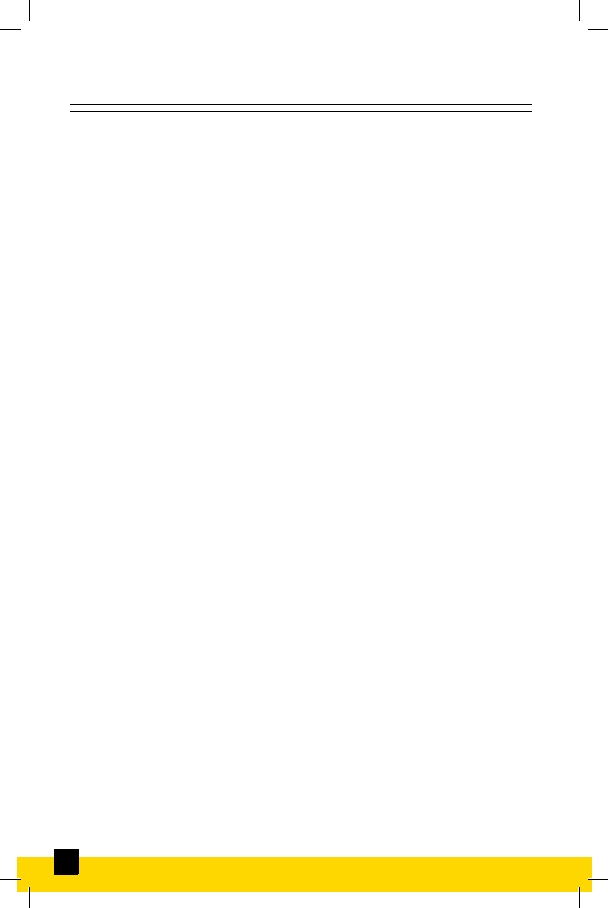
Índíce
Sellador de acrílico látex .................................................. 2
Lista de verificaciòn del exterior de edificios ............... 2
Sellador de butírico de hule ............................................ 2
Lista de verificación del atractivo exterior .................... 3
Atractivo exterior ............................................................... 3
Tablarroca ........................................................................... 3
Primera inspección ............................................................ 4
Lechada ............................................................................... 4
Renta perdida ..................................................................... 4
Tablero del proceso
de preparación de departamentos ............................ 5
Lista de verificación del
proceso de preparación de departamentos ............ 5
Vista de proceso de
preparación de departamentos .................................. 5
Mantenimiento para el proceso
de preparación de departamentos ............................ 5
Argamasa ............................................................................. 6
Cambio de la combinación de una cerradura ............. 6
Segunda inspección .......................................................... 6
Sellador de silicona ............................................................7
Texturizado ..........................................................................7
Cerradura de vacante ........................................................7
Sellador de vinilo látex .......................................................7
1
Mantenimiento y reparación de interiores y exteriores
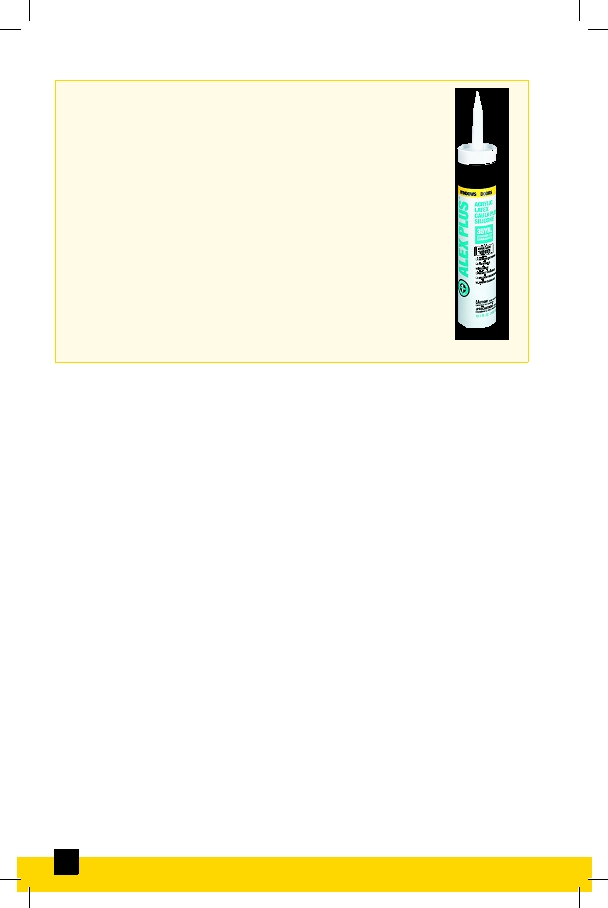
Sellador de acrílico látex
Tipo de sellador considerado muy versátil,
puede limpiarse con agua, seca rápido y
puede pintarse. Uno de los mejores para sellar
alrededor de orillas de madera y hendiduras
pequeñas en áreas secas.
Sellador de acrílico
látex
Lista de verificación del exterior de edificios
Lista de verificaciòn que se usa para identificar problemas
potenciales que pudieran convertirse en grandes gastos
de reparaciones, o potencialmente peligrosos para los
residentes y empleados.
Sellador de butírico de hule
Primordialmente para uso exterior, sellador ideal para
ventanas y puertas contra tormentas, orillas de alcantarillas
y canales de agua y hendiduras exteriores. Además, puede
sellar hendiduras anchas cuando es usado con varillas
selladoras.
2
Mantenimiento y reparación de interiores y exteriores
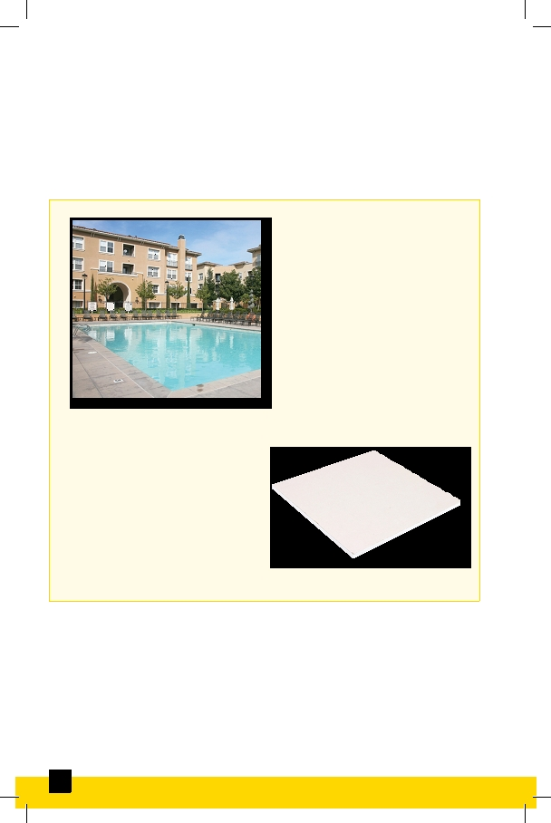
Lista de verificación de la apariencia
exterior
Lista de verificación que se usa para verificar que todos los
estándares de apariencia de la curva se están cumpliendo.
Apariencia exterior
La apariencia de la
parte de afuera de
una propiedad de
departamentos y todas
sus áreas públicas de
adentro.
Apariencia de la Curva
Tablarroca
Plancha hecha de varias
capas de fibra, papel o
felpa pegadas a una capa
dura de yeso en el centro,
que es usada para cubrir
paredes de interior.
Tablarroca
3
Mantenimiento y reparación de interiores y exteriores
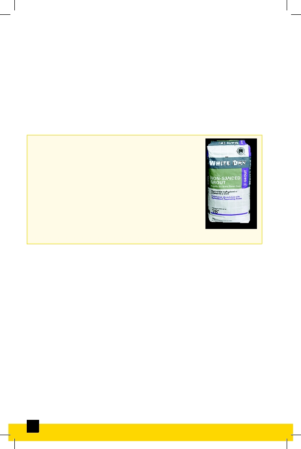
Primera inspección
Identifica las condiciones generales del departamento
antes de la fecha de salida del residente. Esta inspección
es realizada por un técnico de mantenimiento o su
administrador momentos antes de la fecha de salida del
residente o inmediatamente después. Al residente se le
cobrará por cualquier artículo dañado.
Lechada
Mezcla de arena y cal usada para
rellenar hendiduras en azulejos.
Lechada
Renta perdida
Se refiere a la renta que se pierde cada día, y que nunca
podrá ser cobrada, porque un departamento no está
arrendado.
4
Mantenimiento y reparación de interiores y exteriores
Tablero del proceso de preparación de
departamentos
Este tablero es una herramienta que técnicos de
mantenimiento y empleados de oficina usan para controlar
el progreso de los diferentes trabajos necesarios para
restablecer un departamento a su condición original
después que un residente se sale.
Lista de verificación del proceso de
preparación de departamentos
Lista de artículos en un departamento que tienen que ser
inspeccionados y aprobados antes de la fecha de entrada
de un nuevo residente.
Vista del proceso de preparación de
departamentos
Aprender a ver un departamento recién vacante por medio
de los ojos del nuevo residente, además de su equipo de
administración o dueño.
Mantenimiento para el proceso de
preparación de departamentos
También conocido como el Proceso de preparación de
departamentos. Después de que un residente se sale, el
técnico de mantenimiento inspecciona el departamento
para poder tener una idea de todo el trabajo que necesita
hacerse antes de la fecha de entrada del nuevo residente.
5
Mantenimiento y reparación de interiores y exteriores
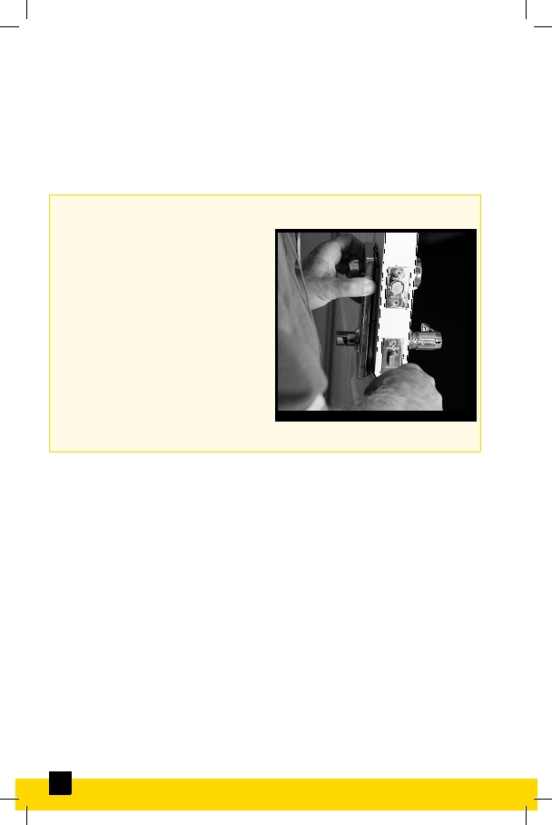
Argamasa
Mezcla pastosa (de cal, agua, y arena) para obras de
albañilería, que endúrese cuando se seca, y puede ser
usada para cubrir paredes, cielos y separaciones.
Cambiio de la
combinación de
una cerradura
Procedimiento que
envuelve cambiar los
pernos dentro del cilindro
de la cerradura, para
hacerla trabajar con una
llave nueva.
Cambio de la combinación de una
cerradura
Segunda inspección
Verifica que el departamento está listo para su nuevo
residente.
6
Mantenimiento y reparación de interiores y exteriores
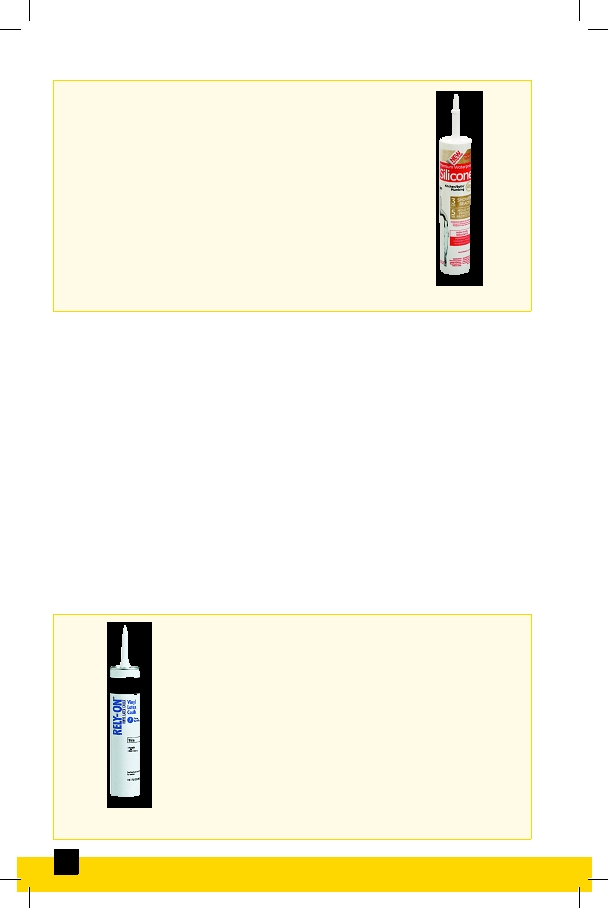
Sellador de silicona
El sellador de preferencia para regaderas,
bañeras, y otras áreas expuestas al agua,
excelente adhesión con una larga vida,
no se opaca o decolora y por lo general
no se puede pintar. Debe limpiarse con
alcohol. Debe trabajarse en áreas bien
ventiladas por que despide amoníaco
cuando esta curando.
Sellador de silicona
Texturizado
Da una textura particular a una superficie, como por
ejemplo: Textura de cascara de naranja, textura de arena y
textura de palomitas de maíz.
Cerradura de vacante
Es una cerradura que se usa en todos los departamentos
vacantes, para poder abrirlos todos con una misma llave.
Sellador de vinilo látex
Tipo de sellador que es aceptable para
áreas mojadas. Se adhiere muy bien,
seca rápido, puede pintarse y puede ser
limpiado con agua.
Sellador de Vinilo
Látex
7
Mantenimiento y reparación de interiores y exteriores
Índíce
Amperio ............................................................................. 10
Chispas eléctricas ............................................................ 10
Balasto ............................................................................... 10
Cable .................................................................................. 10
Disyuntores y fusibles ......................................................11
Circuito ...............................................................................11
Conductor ..........................................................................11
Continuidad .......................................................................11
Corriente ............................................................................11
Incendio eléctrico ............................................................ 12
Tomacorriente eléctrico ................................................. 12
Shock eléctrico ................................................................ 12
Interruptor eléctrico ........................................................ 13
Tomacorriente GFCI ........................................................ 13
Hacer tierra ....................................................................... 13
Alambre caliente .............................................................. 14
Procedimiento de bloqueo y rotulado eléctrico ....... 14
Medidor múltiple ............................................................. 14
Hilo neutral ....................................................................... 15
Ohmios .............................................................................. 15
Sobrecarga ........................................................................ 15
Circuito sobrecargado .................................................... 15
Cola de puerco ................................................................ 16
Equipos de protección personal (PPE) ........................ 16
Fuerza eléctrica ................................................................ 16
8
Mantenimiento y reparación eléctricos
Índíce, continuación
Resistencia .........................................................................17
Corto circuito ....................................................................17
Interruptor vaivén .............................................................17
Voltaje (o voltios) ...............................................................17
Vatios ...................................................................................17
9
Mantenimiento y reparación eléctricos
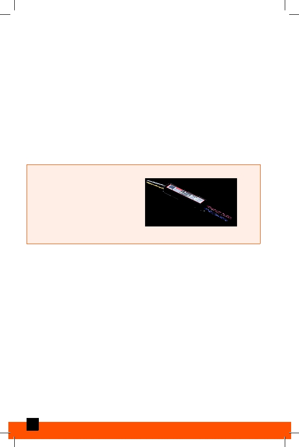
Amperio
Es la medida a la que la corriente corre por un circuito
eléctrico hacia una lámpara, herramienta o aparato.
Chispas eléctricas
Un corto circuito por el aire que sucede cuando una
cantidad grande de energía eléctrica explota hacia afuera
de un dispositivo o aparato eléctrico.
Balasto
Transformador especial que
regula el flujo de corriente
eléctrica a las lámparas
fluorescentes.
Balasto
Cable
Un cable es un grupo de dos o más alambres encerrados
en una funda de metal, hule o plástico.
10
Mantenimiento y reparación eléctricos
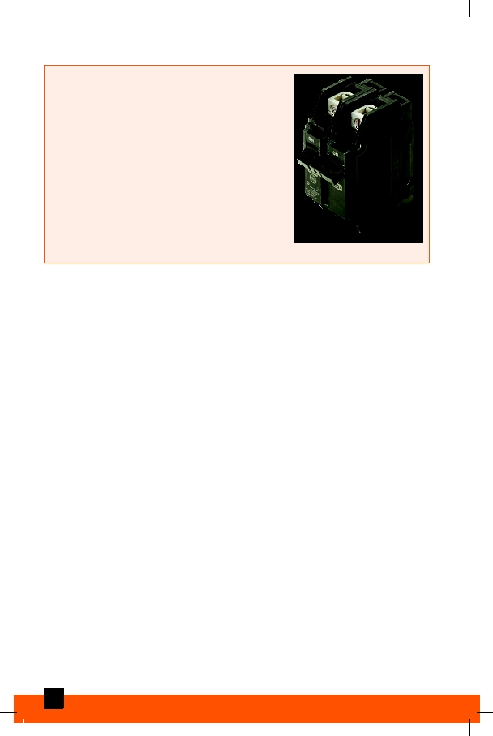
Disyuntores y fusibles
Dispositivos de seguridad para
proteger sistemas eléctricos de
corto circuitos y sobrecargas.
Disyuntores y fusibles
Circuito
Es un circulo continuo de cables o alambres por el cual la
electricidad circula sin interrupción.
Conductor
Cualquier material que permite que la electricidad fluya
por él. El alambre de cobre es un conductor especialmente
bueno.
Continuidad
Paso de electricidad sin interrupción por un circuito o
aparato. Una prueba de continuidad establece si la corriente
podría pasar por un circuito o aparato como debería de ser.
Corriente
El movimiento de electrones sobre un conductor, como un
alambre.
11
Mantenimiento y reparación eléctricos
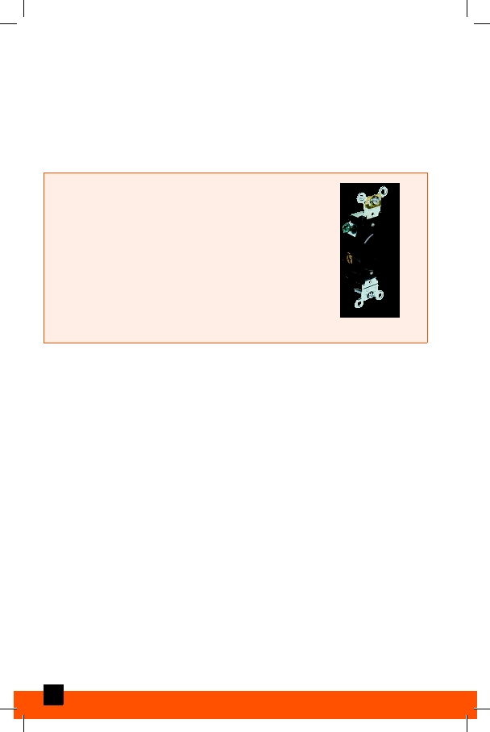
Incendio eléctrico
Incendios comúnmente ocasionados por tomacorrientes
sobrecargados, conexiones flojas, aislamiento de alambre
fundido o corroído.
Tomacorriente eléctrico
Provee la conexión entre los circuitos
de corriente eléctrica en un edificio y
aparatos con cordón eléctrico, u otro
dispositivo que necesita electricidad
para operar.
Tomacorriente
eléctrico
Shock eléctrico
Descarga eléctrica en el cuerpo ocasionada por un
contacto con voltaje suficientemente alto que causa que
corriente fluya por los músculos o cabello.
12
Mantenimiento y reparación eléctricos
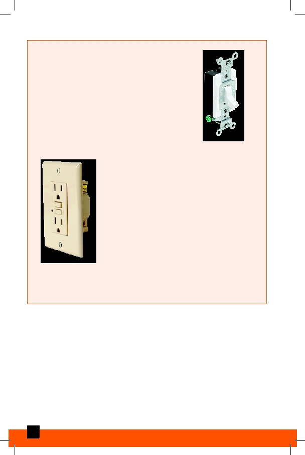
Interruptor eléctrico
Dispositivo diseñado para interrumpir
el flujo de corriente eléctrica.
Interruptor eléctrico
Tomacorriente GFCI
Este dispositivo de seguridad GFCI
controla la corriente de electricidad
que entra y sale de un circuito, y
puede medir cualquier aumento
o pérdida de electricidad. Si la
cantidad de corriente pasando por
el circuito cambia en lo más mínimo,
el GFCI apaga la corriente eléctrica
rápidamente en el circuito. Estos
interruptores son requeridos en
Tomacorriente GFCI
cocinas y baños a menos de tres pies
de cualquier accesorio de plomería.
Hacer tierra
Es una característica clave de seguridad, diseñada para
conducir electricidad hacia la tierra donde se convierte
inofensiva. Un hilo a tierra (alambre de cobre descubierto
o alambre con aislamiento verde) provee un camino de
retorno hacia la tierra adicional a la corriente eléctrica.
13
Mantenimiento y reparación eléctricos
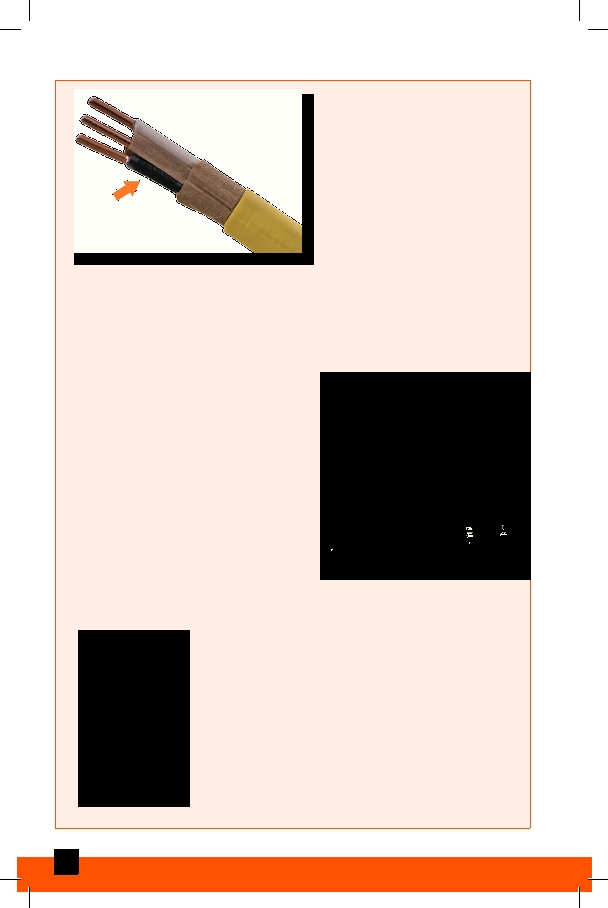
Hilo caliente
Cualquier alambre que
contiene voltaje. En un
circuito eléctrico, el
alambre caliente está
cubierto normalmente con
aislamiento negro o rojo.
Hilo caliente
Procedimeinto de bloqueo y rotulado
eléctrico
Es un procedimiento de
seguridad para comprobar
que potencia y fuentes de
energía, como la electricidad,
están apagadas y aseguradas
apropiadamente. Este
proceso es usado cuando se
está haciendo mantenimiento
y reparaciones eléctricas
como: instalando
interruptores nuevos,
tomacorrientes y lámparas o
Procedimeinto de bloqueo y
cuando se está investigando
rotulado eléctrico
un corto circuito.
Medidor múltiple
Es un aparato operado por baterías.
Es usado para medir voltaje eléctrico.
Probar continuidad en interruptores
eléctricos y lámparas de luz, y probar la
resistencia en dispositivos eléctricos como
elementos de calefacción.
Medidor Múltiple
14
Mantenimiento y reparación eléctricos
Hilo neutral
Alambre que retorna corriente a cero voltaje a su fuente
de fuerza eléctrica original, normalmente cubierto con
aislamiento blanco o gris claro.
Ohmios
Son las unidades que miden resistencia eléctrica.
Sobrecarga
Una demanda de más corriente de la que el alambre de un
circuito o dispositivo eléctrico está diseñado para cargar,
normalmente causa que un fusible se funda o un disyuntor
se dispare.
Circuito sobrecargado
Un circuito que está cargando mucho más fuerza eléctrica
de la que fue diseñado para cargar.
15
Mantenimiento y reparación eléctricos
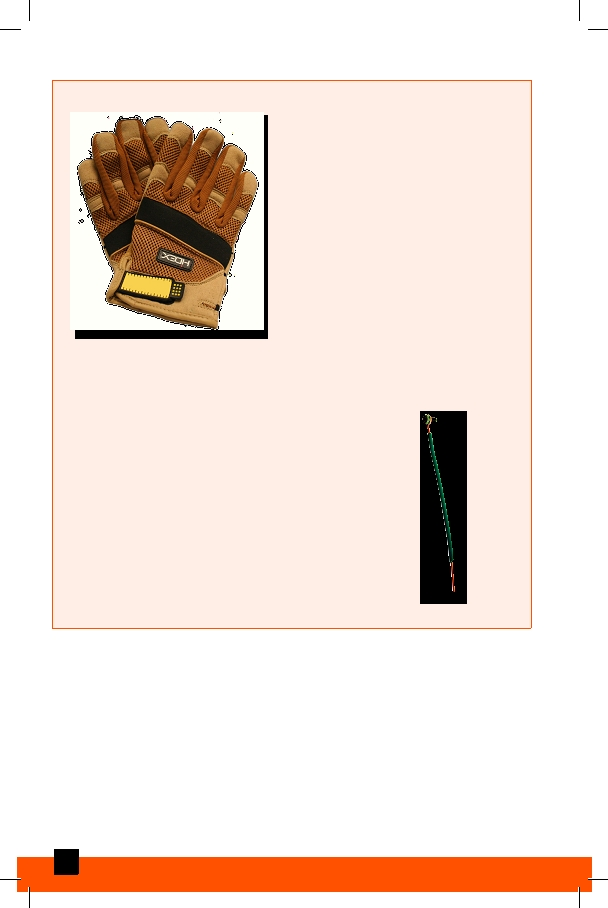
Equipo de protección
personal (PPE)
Equipo usado para minimizar
ser expuesto a una variedad
de peligros. Ejemplos de PPE
incluyen artefactos como
guantes, gafas protectoras,
zapatos de suela de hule,
dispositivos para proteger
los oídos, cascos duros,
respiradores y trajes protectores
de cuerpo completo.
Equipo de protección personal (PPE)
Cola de puerco
Es un pedazo de alambre corto, casi
siempre usado para conectar un solo
alambre al tornillo de una terminal en
lugar de dos o más alambres.
Cola de puerco
Fuerza eléctrica
La cantidad de energía eléctrica siendo consumida por un
dispositivo eléctrico o circuito.
16
Mantenimiento y reparación eléctricos
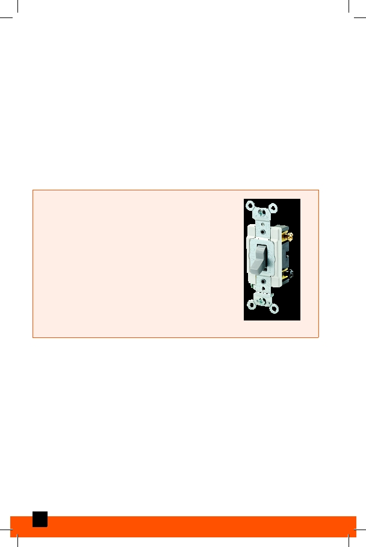
Resistencia
Oposición al flujo de electricidad, que es medida en
ohmios.
Corto circuito
Cuando la corriente en un circuito busca el camino de
retorno por otro medio en lugar del alambre neutral.
Interruptor vaivén
Interruptores con tres terminales además
de la terminal de tierra, que pueden
operar lámparas desde dos diferentes
ubicaciones, y se usan en pares.
Interruptor vaivén
Voltaje (o voltios)
Es una medida de electricidad en términos de presión.
Vatios
Una medida de la fuerza eléctrica en términos de
energía total consumida. Vatios pueden ser calculados
multiplicando el voltaje por el amperaje.
17
Mantenimiento y reparación eléctricos

Índice
Tubo ABS ...........................................................................20
Aireador .............................................................................20
Aparatos electrodomésticos ..........................................20
Tubo CPVC ........................................................................20
Válvula de alivio ................................................................ 21
Sistema de drenaje, alcantarillado, y ventilación
(DWV) ............................................................................. 21
Conexiones ....................................................................... 21
Accesorios de plomería .................................................. 21
Tubo de hierro galvanizado ...........................................22
Procedimientos de bloqueo y rotulado eléctricos ....22
Hojas de Materiales de Datos de Seguridad (MSDS) .22
Equipos de Protección Personal (PPE) ........................22
Llave Stillson .....................................................................23
Tuberías .............................................................................23
Culebra de plomero (barreno) ......................................23
Sistema de plomería .......................................................23
Destapacaños ...................................................................24
Tapón de montaje ...........................................................24
Soplete de propano .........................................................24
Trampas .............................................................................24
Tubo PVC ..........................................................................24
Chorro ...............................................................................25
Válvula de llenado del inodoro .....................................25
Válvula de derrame del inodoro ...................................25
18
Mantenimiento y reparación de plomería
Índice, continuación
Sello de Cera del Inodoro ..............................................25
Conexión Transitiva .........................................................26
Cortador de tubo .............................................................26
Válvulas ..............................................................................26
Salida de desagüe ............................................................26
Distribución de agua .......................................................26
Varilla de ánodo ............................................................... 27
Tubo de descenso del calentador de agua ................ 27
Flus del calentador de agua .......................................... 27
Válvula de alivio para presión y temperatura del
calentador de agua .....................................................28
Termostato del calentador de agua .............................28
Suministro de agua ..........................................................28
19
Mantenimiento y reparación de plomería
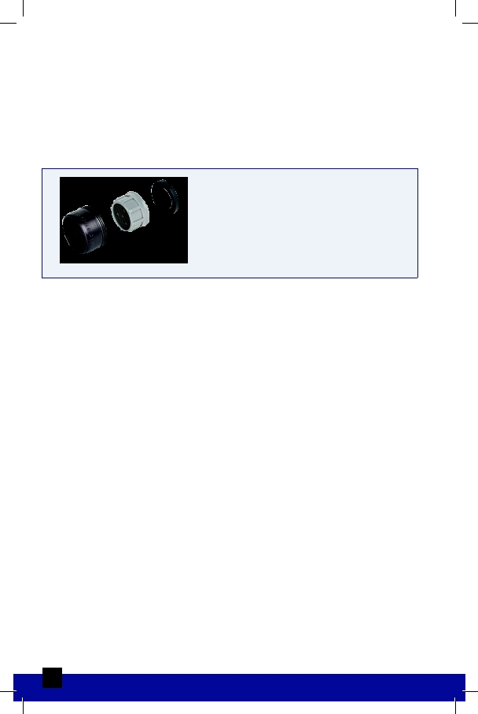
Tubo ABS
Tuberías (Acrylonitrile Butadiene Styrene) usadas
comúnmente en sistemas de drenaje pero no aceptables en
construcciones nuevas.
Aireador
Filtro al final del chorro en grifos
de agua que atrapa minerales
y sedimentos en tuberías de
Aireador
suministro de agua.
Aparatos electrodomésticos
Máquinas que usan agua en un apartamento, como
calentadores de agua, lavadoras de platos, lavadoras de
ropa, purificadores de agua y trituradores de desperdicios.
Tubo CPVC
Tuberías (Polyvinyl Chloride) de vinyl usadas comúnmente
en sistemas de distribución de agua caliente y fría.
20
Mantenimiento y reparación de plomería
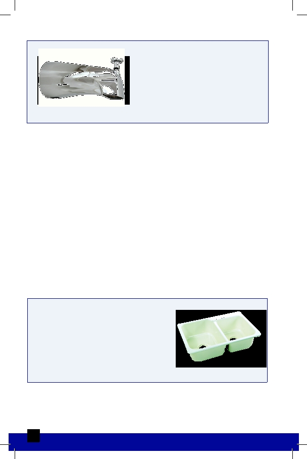
Válvula de alivio
Válvula en regaderas que permite
que el agua pase del chorro de la
bañera a la regadera.
Válvula de Alivio
Sistema de drenaje, alcantarillado y
ventilación (DWV)
También puede ser llamado el sistema de salida de
desagüe. Ventilación envía aire fresco a las tuberías de
drenaje para que estas puedan desaguar libremente.
Conexiones
Piezas de metal o plástico que conectan tramos rectos
de tuberías juntas. Las conexiones communes incluyen
uniones de codos, acoplamientos y la T.
Accesorios de plomería
Dispositivos de plomería que usan
agua en un departamento, como
lavaderos, regaderas, bañeras e
inodoros.
Accesorios de plomería
21
Mantenimiento y reparación de plomería
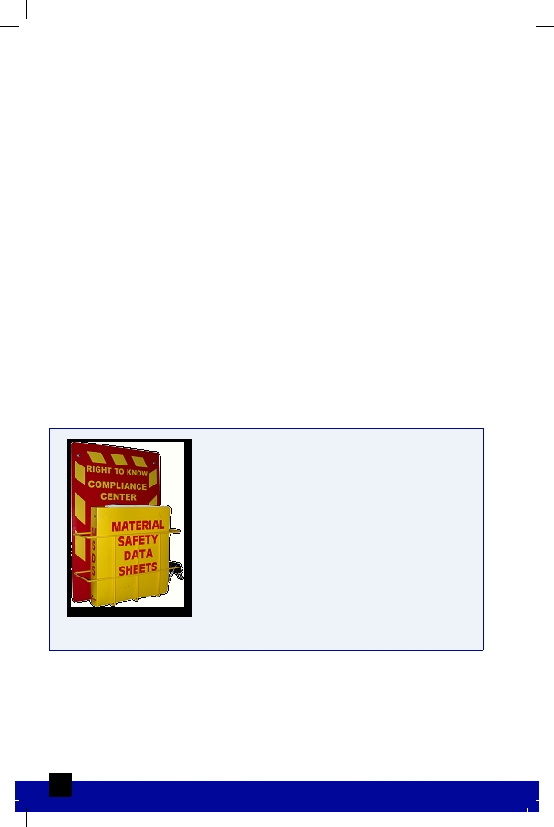
Tubo de hierro galvanizado
Tuberías comúnmente usadas en sistemas de distribución
de agua en edificios de departamentos antiguos.
Las tuberías de hierro galvanizado tienen una capa delgada
de zinc para reducir corrosión.
Procedimiento de bloqueo y rotulado
eléctricos
Es un procedimiento de seguridad para comprobar que
potencia y fuentes de energía están apagadas y aseguradas
apropiadamente. Siga este proceso cuando esté haciendo
mantenimiento y reparaciones de plomería, particularmente
cuando esté cerrando las tuberías de suministro de agua o
trabajando con un aparato eléctrico, como un calentador
de agua. (Consulte la página 14)
Hojas de Materiales de Datos
de Seguridad (MSDS)
Hojas de información acerca del uso
de materiales, requeridos por la oficina
de Administración de Seguridad y Salud
Ocupacional (OSHA), que contienen las
propiedades de los químicos, peligros
a la salud, y el equipo de protección
Hojas de Materiales de
Datos de Seguridad (MSDS)
personal (PPE) que debe usarse.
Equipos de Protección Personal (PPE)
(Consulte la página 16)
22
Mantenimiento y reparación de plomería
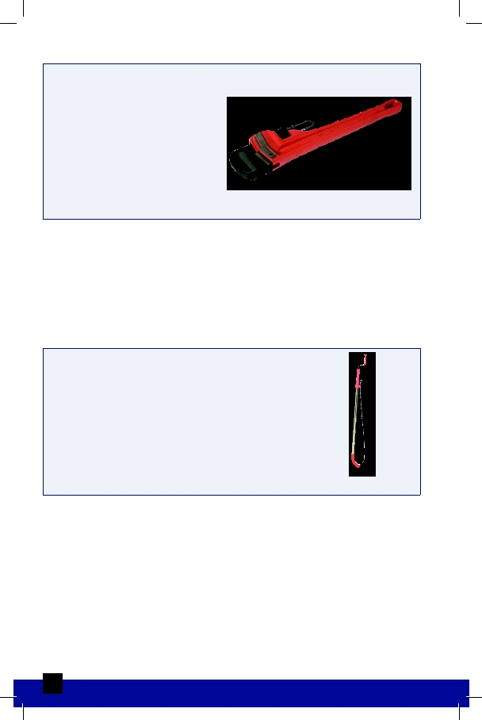
Llave Stillson
Herramienta que tiene una
mordaza ajustable y puede
adaptarse a una variedad
de tamaños diferentes
de tuberías. Puede ser
usada para aflojar y apretar
Llave Stillson
tuberías y tuercas grandes.
Tuberías
Tubos de metal o plástico que transportan agua, drenaje, y
aire fresco en el sistema de plomería.
Culebra de plomero (barreno)
Herramienta usada para destapar líneas
de drenaje bloqueadas.
Culebra de
plomero (barreno)
Sistema de plomería
El sistema de plomería en un edificio de departamentos
funciona a base de gravedad y presión, y está compuesto
por tres partes: suministro de agua, distribución de agua y
desagüe.
23
Mantenimiento y reparación de plomería
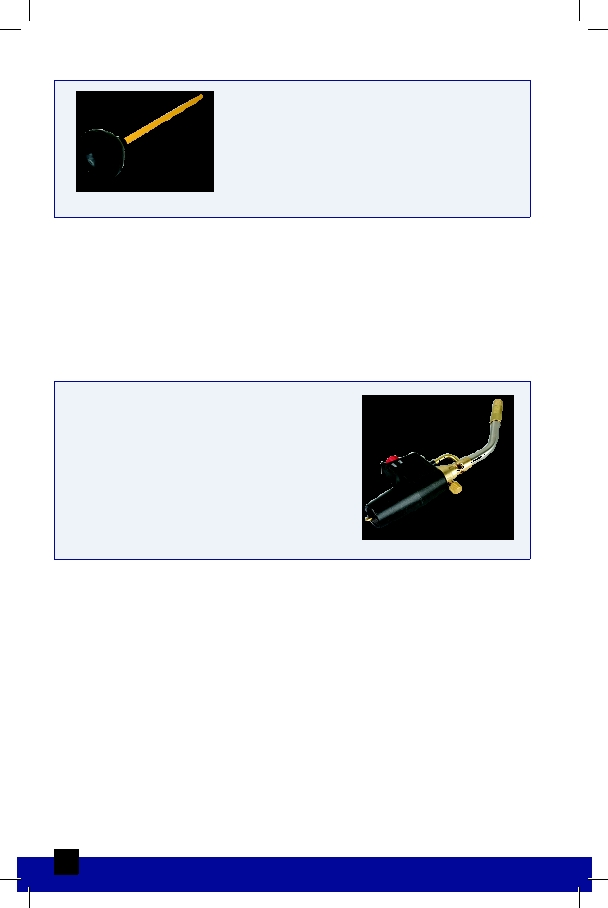
Destapacaños
Herramienta usada para destapar
líneas de drenaje bloqueadas con
presión de aire y agua.
Destapacaños
Tapón de montaje
Dispositivo entre el lavamanos y la tubería de drenaje que
sirve para llenar el lavamanos de agua.
Soplete de propano
Herramienta que se usa para soldar
conexiones en tuberías de cobre.
Soplete de propano
Trampas
Tuberías en forma de “U” localizadas en la línea de drenaje
de todos los accesorios de plomería para evitar que gases
tóxicos entren al edificio.
Tubo PVC
Tuberías de vinilo usadas comúnmente en sistemas de
drenaje en lavaderos, bañeras y regaderas.
24
Mantenimiento y reparación de plomería
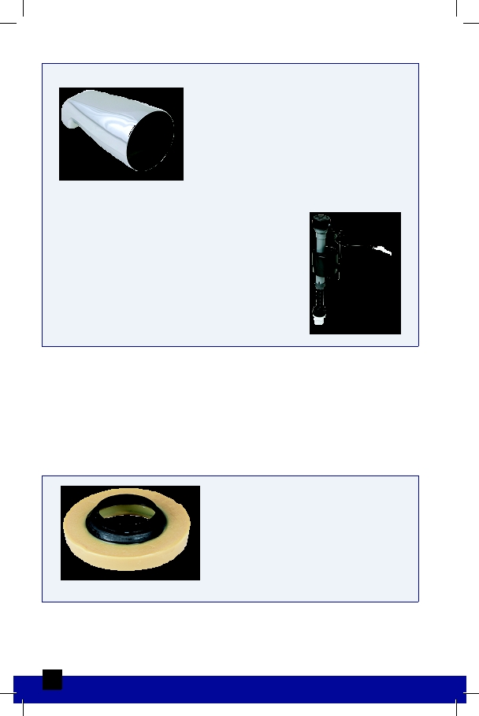
Chorro
Parte del grifo de agua por donde
sale el agua.
Chorro
Válvula de llenado del
inodoro
Válvula que llena de agua el tanque
de agua del inodoro.
Válvula de llenado del inodoro
Válvula de derrame del inodoro
Válvula que permite el paso de agua del tanque de agua a
la taza del inodoro.
Cuello de cera del
inodoro
Sello entre la taza del inodoro
y la tubería de drenaje que
previene que agua sucia y gases
Cuello de cera del inodoro
tóxicos entren a la casa.
25
Mantenimiento y reparación de plomería
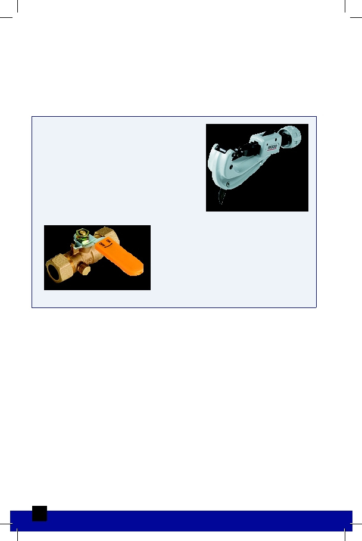
Conexión transitiva
Unión usada para conectar tuberías de diferentes materiales
y evitar corrosión.
Cortador de tubo
Herramienta que se usa para
hacer cortes rectos y limpios en
tuberías de cobre y plástico.
Cortador de tubo
Válvulas
Accesorios de plomería que
controlan el paso del agua en
sistemas de plomería, incluyendo
grifos de agua y válvulas de paso.
Válvulas
Desagüe
El agua sucia y el drenaje salen fuera de los edificios de
apartamentos por las tuberías de desagüe e inodoros, y
logra llegar a las plantas procesadoras de drenaje.
Distribución de agua
Las tuberías dentro de los edificios de departamentos
distribuyen agua presurizada fría y caliente a grifos de agua,
regaderas, inodoros y aparatos electro-domésticos en cada
departamento.
26
Mantenimiento y reparación de plomería
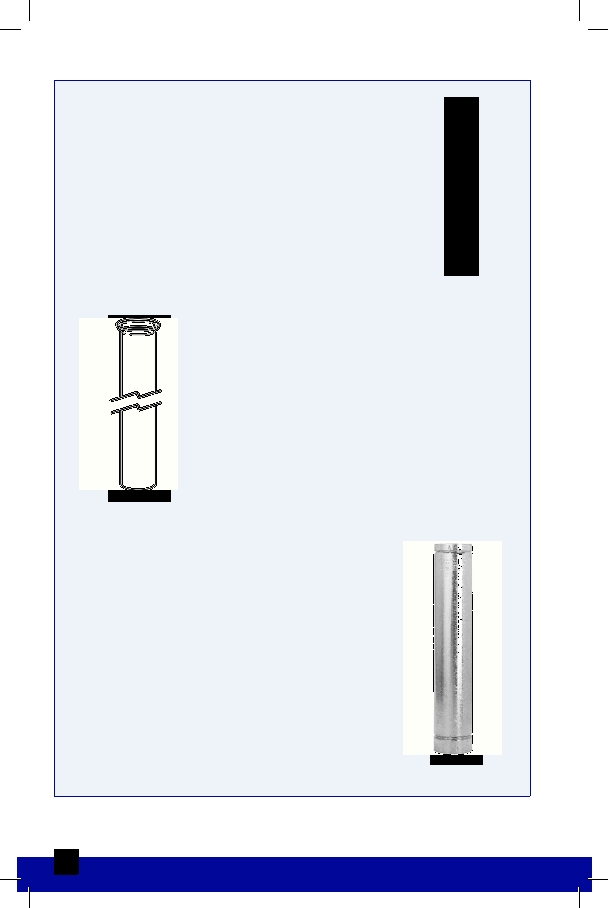
Varilla de ánodo
Varilla dentro del tanque que algunas
veces se conoce como varilla sacrificial.
Es una varilla de metal que previene
corrosión dentro del tanque de agua.
Varilla de ánodo
Tubo de descenso del
calentador de agua
Tubo largo y estrecho dentro del tanque
de agua que dirige la entrada de agua
fría al fondo del tanque, y previene que
el agua fría se mescle prematuramente
con el agua caliente que sale por la parte
superior del tanque.
Tubo de descenso del
calentador de agua
Flus del calentador de agua
Los calentadores a gas tienen que
ventilar hacia afuera, ya que la
combustión de gas natural produce
gases tóxicos como monóxido de
carbono. Por esta razón, en el centro
de la parte de arriba del calentador de
agua a gas se encuentra un flus, que
transporta los gases peligrosos hacia la
tubería de ventilación ensamblada en la
parte de arriba del tanque de agua.
Flus del calentador de
agua
27
Mantenimiento y reparación de plomería
Válvula de alivio para presión y temperatura
del calentador de agua
Es una pieza de seguridad requerida en todos los
calentadores de agua. Esta válvula de alivio remueve la
presión en el tanque de agua cuando hay un exceso de
temperatura o presión en el tanque más arriba de los límites
del tanque.
Termostato del calentador de agua
Dispositivo dentro del tanque de agua que percibe cuando la
temperatura del agua baja por debajo de la temperatura pre-
seleccionada y causa que los elementos de calefacción (en
calentadores de agua eléctricos) o quemadores de gas (en
calentadores de agua de gas) prendan y calienten el agua a la
temperatura seleccionada.
Suministro de agua
El agua es suministrada por toda la ciudad por medio de
grandes tuberías situadas debajo de la tierra que llegan a
todos los domicilios, negocios y apartamentos. Medidores de
agua calculan la cantidad de agua usada en cada lugar.
28
Mantenimiento y reparación de plomería
Índice
Aire acondicionado ..................................................... 32
Compresor ........................................................................32
Relé de arranque del motor del compresor ...............32
Serpentina del condensador .........................................32
Circuitos de control .........................................................33
Termómetro digital ..........................................................33
Balanza electrónica .........................................................33
Detector de fugas electrónico ......................................34
Serpentina del evaporador ............................................34
Circuitos de entrada de fuerza eléctrica .....................34
Burbujas detectoras de fugas ........................................35
Circuitos de componenetes de carga .........................35
Manómetros .....................................................................36
Hojas de Materiales de Datos de Seguridad (MSDS) .36
Dispositivo medidor ........................................................36
Medidor múltiple ............................................................. 37
Máquina de recuperación .............................................. 37
Punto de hervor del refrigerante .................................. 37
Líenas de refrigerante .....................................................38
Presión del refrigerante ..................................................38
Punto de saturación del refrigerante ...........................38
Refrigerantes .....................................................................39
Aire de retorno en pleno ................................................39
Herramienta para reemplazar el centro de una válvula
Schroeder ......................................................................40
29
Mantenimiento y reparación de climatación
Índice, continuación
Relación de Eficiencia de Energía Temporal (SEER) ..40
Puerto de servicio ............................................................ 41
Capacitor de arranque y marcha .................................. 41
Subenfriamiento...............................................................42
Supercalentamiento ........................................................42
Aire de suministro ............................................................42
Termostato ........................................................................43
Bomba de evacuación ....................................................43
Sistemas de calefacción ..............................................44
Separadores de aire .........................................................44
Aquastat .............................................................................44
Válvula de balance ...........................................................44
Soplador ............................................................................45
Caldera de agua ...............................................................45
Circuladores ......................................................................45
Combustión completa ...................................................46
Caldera de calefacción eléctrica ..................................46
Elementos de calefacción eléctricos ...........................46
Relé del ventilador ........................................................... 47
Interruptor del ventilador ............................................... 47
Válvula de verificación de flujo ..................................... 47
Tubería de ventilación ..................................................... 47
Enlace de fusibles ............................................................48
Quemadores de gas........................................................48
Válvula de control de gas ...............................................48
30
Mantenimiento y reparación de climatación

Índice, continuación
Caldera de gas .................................................................49
Ventilador de calefacción a gas ....................................49
Interruptor limite de caldera a gas ...............................49
Múltiple a gas ....................................................................50
Intercambiador de calor .................................................50
Calor ...................................................................................50
Transferencia de calor .....................................................51
Sistemas de calefacción hidrónica ................................51
Unidades terminales hidrónicas .....................................51
Sistemas de ignición .......................................................52
Combustión incompleta ................................................52
Entrelazado .......................................................................52
Interruptor de límite ........................................................53
Interruptor de nivel de agua ..........................................53
Punto para no cambio de presión ...............................53
Válvula de Reducción de presión .................................54
Válvula de alivio de Presión ...........................................54
Secuenciador ....................................................................54
Tanque estándar de expansión/Extrol .........................55
Termacople/Pila de fuerza .............................................55
Válvula de zona/Válvula dial (diales Dan Floss) ..........55
31
Mantenimiento y reparación de climatación
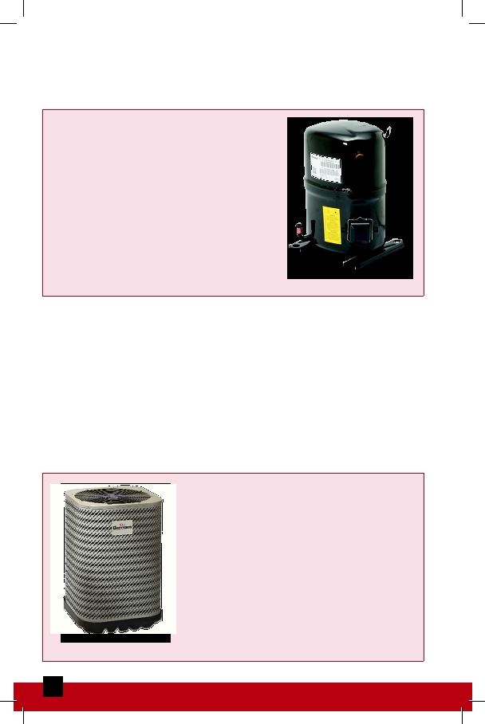
Aire acondicionado
Compresor
Bomba especializada que absorbe
vapor de presión y temperatura baja
del evaporador, por medio de una
tubería llamada línea de succión y lo
comprime, aumentando su presión
y temperatura, cambiándolo a
vapor de alta presión y temperatura,
y empujándolo hacia otra tubería
llamada línea de descarga.
Compresor
Relé de arranque del motor del compresor
Dispositivo eléctrico operado magnéticamente que
consiste de una serpentina, y uno o más sets de contactos
que son usados para conectar y desconectar el circuito
de suministro de voltaje con el alambrado de arranque del
compresor.
Serpentina del
Condensador
Con la ayuda de un ventilador,
esta serpentina condensa el
refrigerante de vapor a alta presión
y temperatura que viene del
compresor a refrigerante líquido
de presión y temperatura alta. Esta
serpentina tiene aletas de metal
Serpentina del Condensador
que ayudan a disipar el calor.
32
Mantenimiento y reparación de climatación
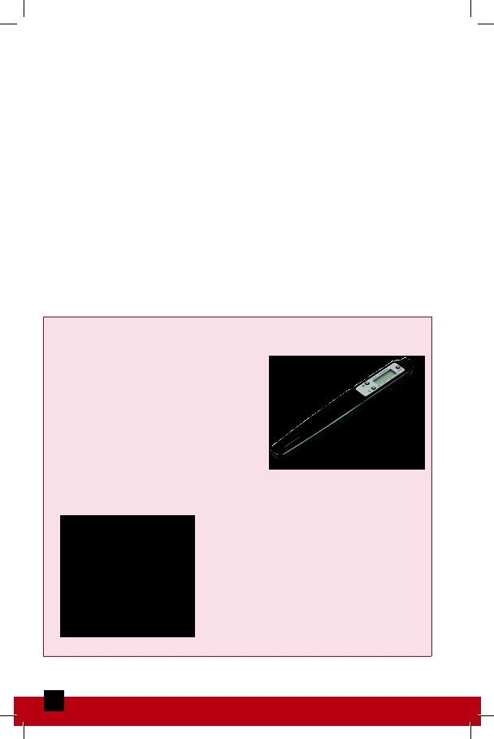
Circuitos de control
Estos circuitos son la cadena que conecta los componentes
de carga con los circuitos de entrada de fuerza eléctrica,
arrancando y parando, o de otra manera controlando la
operación de los componentes de carga. Normalmente
estos circuitos contienen uno o más dispositivos de
control, como relés, interruptores, o termostatos para
aplicar o quitar energía de los componentes de carga. Los
circuitos de control normalmente operan con 24 voltios,
y son conocidos también como circuitos de bajo voltaje,
y porque son de bajo voltaje, son más seguros de operar,
usan menos energía y tienen alambrado más pequeño y
liviano.
Termómetro digital
Herramienta utilizada para medir
la temperatura de las tuberías
de refrigerante (de succión y
líquido) cuando se está cargando
el sistema con refrigerante. Esta
puede ser usada también para
medir la temperatura del aire de
retorno y aire de suministro en el
sistema.
Termómetro digital
Balanza electrónica
Equipo utilizado para medir la
cantidad de refrigerante introducido
o removido en un sistema de aire
acondicionado.
Balanza electrónica
33
Mantenimiento y reparación de climatación
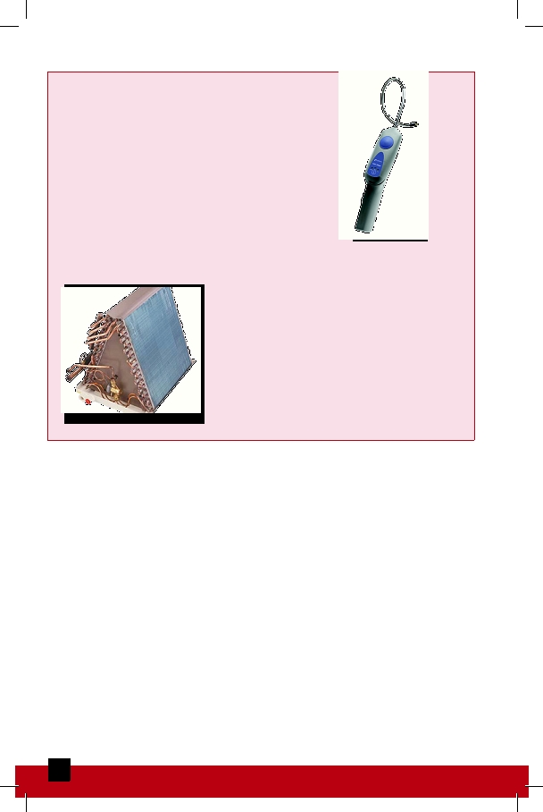
Detector de fugas
electrónico
Herramienta utilizada para
localizar el área general de
una fuga de refrigerante en un
sistema de aire acondicionado.
Detector de fugas electrónico
Serpentina del evaporador
La serpentina permite que el
refrigerante líquido absorba el calor
del aire dentro de la casa, causando
que el refrigerante aumente de
temperatura y pase de líquido a vapor
(se evapore) y el aire dentro de la casa
pierda calor o se enfrié, y enfrié el
Serpentina del evaporador
edificio.
Circuitos de entrada de fuerza eléctrica
Estos circuitos son la fuente de distribución de
fuerza eléctrica a los sistemas de aire acondicionado.
Normalmente consisten de alambrados de fuerza
eléctrica instalados de la fuente de energía hacia una caja
interruptora cerca de los equipos de aire acondicionado, y
de esta caja, a los equipos. Estos circuitos también incluyen
dispositivos de protección, como fusibles y disyuntores.
34
Mantenimiento y reparación de climatación
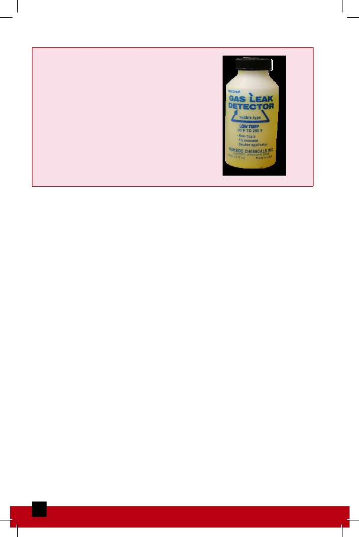
Burbujas detectoras de
fugas
Jabón líquido especial en una
botella con aplicador, utilizado
para localizar el área exacta de una
fuga de refrigerante, una vez que
se ha usado un detector de fugas
electrónico para localizar el área
general de la fuga de refrigerante
en el sistema.
Burbujas detectoras de fugas
Circuitos de componentes de carga
Circuitos que mandan energía eléctrica a los componentes
de carga. Los componentes de carga son dispositivos
que convierten energía eléctrica en otro tipo de energía
como calor o movimiento mecánico. En este proceso,
los componentes de carga consumen fuerza eléctrica.
Compresores, motores y ventiladores son algunos de los
componentes de carga que se encuentran en aparatos de
aire acondicionado. Como los circuitos de componentes
de carga son energizados y operados por entrada de fuerza
eléctrica de alto voltaje, son llamados muy a menudo
circuitos de alto voltaje.
35
Mantenimiento y reparación de climatación
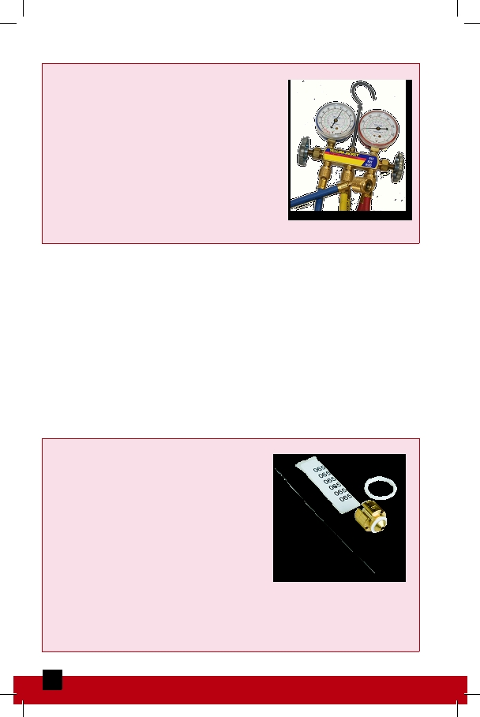
Manómetros
Herramienta utilizada para obtener
datos de presión y temperatura del
refrigerante en un sistema de aire
acondicionado a diferentes puntos.
Tiene dos calibradores: uno para medir
la presión baja del sistema, y el otro
para medir la presión alta.
Manómetros
Hojas de Materiales de Datos de Seguridad
(MSDS)
Hojas de información acerca de el uso de materiales,
requeridas por la oficina de Administración de Seguridad y
Salud Ocupacional (OSHA), que contienen las propiedades
de los químicos, peligros a la salud y equipo de protección
personal que debe usarse.
Dispositivo medidor
Este dispositivo regula el flujo de
refrigerante líquido que pasa al
evaporador. Cuando el refrigerante
pasa por este dispositivo, cambia
de líquido a alta presión y
temperatura a líquido de baja
presión y temperatura. Actualmente,
Dispositivo medidor
el dispositivo medidor más
comúnmente usado en sistemas de aire acondicionado
es el tubo capilar; algunos sistemas más modernos
tienen una válvula de expansión termostática (TXV).
36
Mantenimiento y reparación de climatación
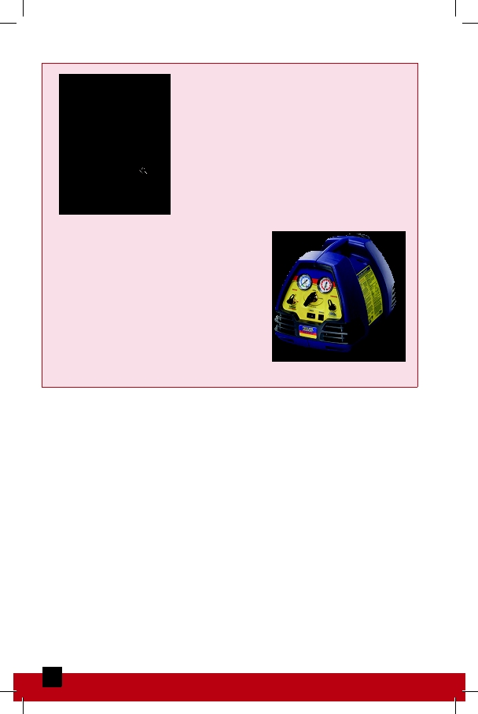
Medidor múltiple
Versátil, aparato operado por
baterías utilizado para medir voltaje
eléctrico, probar continuidad en
interruptores eléctricos y lámparas
de luz, y probar la resistencia
en dispositivos eléctricos como
elementos de calefacción.
Medidor múltiple
(Consulte la página 13).
Máquina de
recuperación
Equipo utilizado para remover el
refrigerante de un sistema de aire
acondicionado, y almacenarlo
en un cilindro aprobado por
la Agencia Protectora del
Medioambiente (EPA).
Máquina de recuperación
Punto de hervor del refrigerante
Es el punto en que el refrigerante cambia de estado líquido
a vapor (se evapora) en un sistema de aire acondicionado.
37
Mantenimiento y reparación de climatación
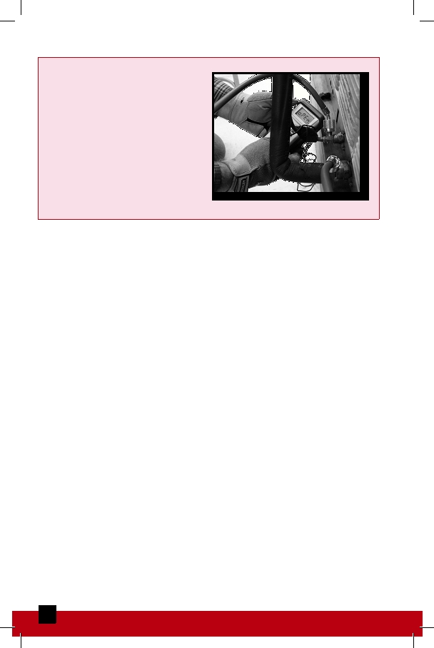
Líneas de
refrigerante
Estas tuberías están hechas
de cobre y transportan
el refrigerante del
condensador a la serpentina
del evaporador. Tienen una
línea de succión (tubería
grande) y una línea de
Líneas de refrigerante
líquido (tubería pequeña).
Presión del refrigerante
La presión en un sistema de aire acondicionado sellado,
calculada en libras de presión por pulgada cuadrada
calibrada (PSIG).
Punto de saturación del refrigerante
Punto en que el refrigerante cambia de estado de vapor a
líquido (se condensa) en un sistema de aire acondicionado.
38
Mantenimiento y reparación de climatación
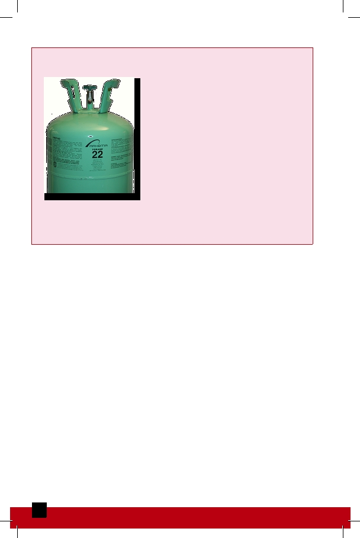
Refrigerantes
Químicos que circulan alrededor
de sistemas de aire acondicionado,
absorbiendo y expulsando calor
a la vez que son hervidos y
condensados en el sistema. El
refrigerante más comúnmente
usado actualmente en sistemas
de aire acondicionado de
departamentos es el R22. Los
sistemas nuevos, sin embargo,
usan refrigerantes menos dañinos
Refrigerantes
al medioambiente como el R-410A
para cumplir con las regulaciones
gubernamentales.
Retorno de aire en plenum
Es por aquí por donde el aire caliente de la casa entra al
aparato de aire acondicionado por medio de un motor
ventilador que absorbe el aire y lo avienta a través del
evaporador.
39
Mantenimiento y reparación de climatación
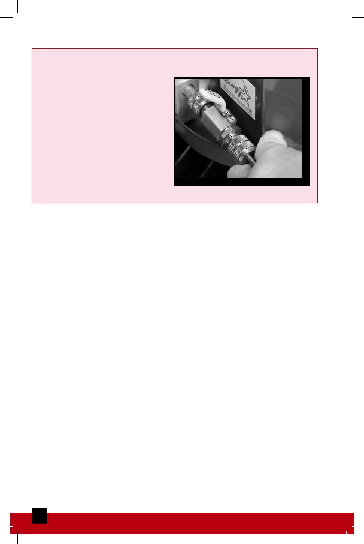
Herramienta
para reemplazar
el centro de una
válvula Schroeder
Herramienta utilizada para
extraer el centro de una
válvula de refrigerante sin
tener que quitar o dejar
escapar el refrigerante del
sistema.
Herramienta para reemplazar el centro de
una válvula Schroeder
Radio de Eficiencia de Energía Temporal
(SEER)
El índice SEER indica las Unidades Térmicas Británicas (BTU)
de salida de enfriamiento durante una temporada típica
de enfriamiento divididas por el total de energía eléctrica
consumida en horas de potencia durante el mismo período.
Entre más alto es el índice SEER, más eficiente será el
aparato de operar, esto significa que usara menos energía
eléctrica para lograr el mismo trabajo.
40
Mantenimiento y reparación de climatación
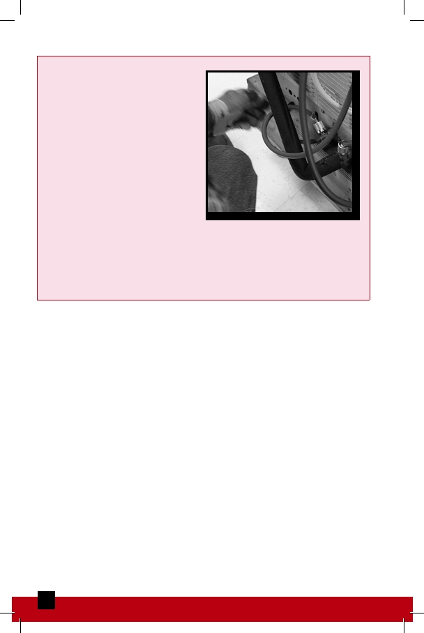
Puertos de servicio
Estas válvulas permiten
el acceso al refrigerante
para diagnosticar o
dar servicio al sistema,
y están normalmente
localizadas en las líneas
de refrigerante cerca del
compresor, pero pueden
estar también en cualquier
Puertos de servicio
otro punto de las tuberías.
Algunas de estas válvulas también pueden ser utilizadas
para aislar una parte del sistema de refrigerante de otro
componente cambiando la posición de la válvula.
Capacitor de arranque y de marcha
Dispositivos acumuladores de energía eléctrica que
ayudan a superar la torsión necesaria para arrancar un
motor. Además, proveen energía eléctrica necesaria para
hacer que el motor marche eficientemente. Los circuitos
de arranque y marcha del motor de un compresor usan
capacitadores que afectan la potencia, amperaje, torsión,
velocidad y eficiencia del motor.
41
Mantenimiento y reparación de climatación
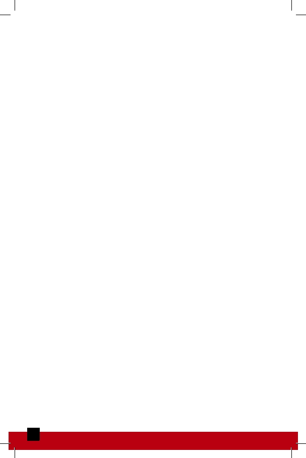
Subenfriamiento
Calor adicional removido del refrigerante una vez que ha
pasado de vapor a alta presión y temperatura a líquido a
alta presión y temperatura (se ha condensado) dentro del
condensador. Este método de subenfriamiento debe ser
usado para verificar y ajustar la presión del refrigerante
en sistemas nuevos de aire acondicionado que usan el
nuevo refrigerante R-410A, y tienen una válvula expansión
termostática (TXV).
Supercalentamiento
El calor adicional del ambiente interior agregado al
refrigerante en el evaporador después de que el refrigerante
ha pasado de líquido a vapor dentro el evaporador.
Sabiendo la cantidad de súpercalentamiento en la línea
de succión, se puede establecer si el sistema está cargado
apropiadamente.
Aire de suministro
Localizado en el lado de descarga del evaporador, el aire
de suministro, envía aire frio al apartamento. El suministro
incluye el pleno de suministro, ducto de suministro, ramales
de ductos y ventilas de pared.
42
Mantenimiento y reparación de climatación
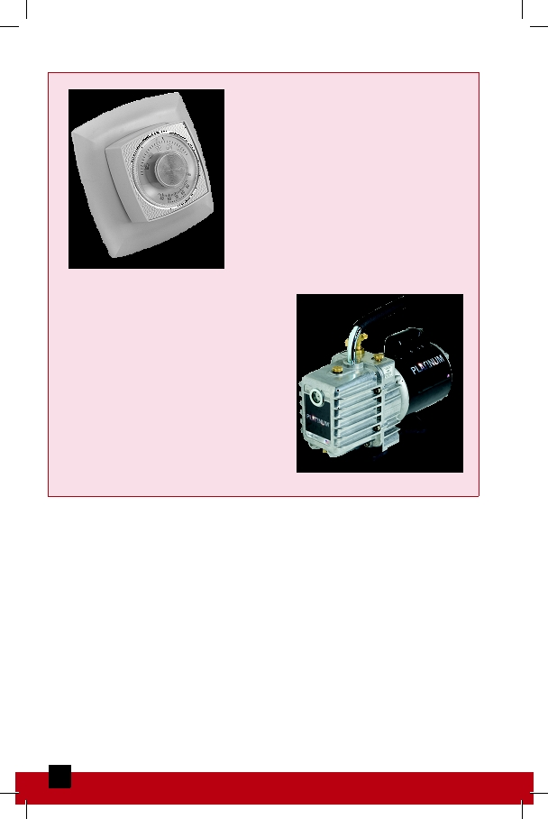
Termostato
Dispositivo utilizado para prender
y apagar el sistema de aire
acondicionado, además de ser
usado para fijar la temperatura
deseada dentro de la casa.
Algunos termostatos pueden ser
programados digitalmente, o
pueden ser análogos y ser fijados
Termostato
por medio de una varilla o dial.
Bomba de evacuación
Bomba operada por motor
que es utilizada para evacuar
y/o deshidratar las tuberías de
refrigerante de un sistema.
Bomba de evacuación
43
Mantenimiento y reparación de climatación
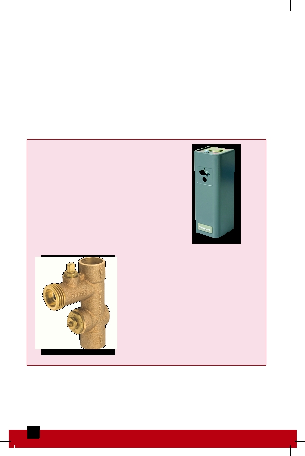
Los sistemas de calefacción
Separadores de aire
Los separadores de aire atrapan pequeñas burbujas de aire
en el agua, y las pasan a una ventanilla de aire automática o
manual por la cual son extraídas del sistema.
Aquastat
El aquastat, como el
termostato en otros sistemas,
es un dispositivo sensor de
temperatura, responsable de
prender y apagar el calentador
de agua y mantener el agua a la
temperatura deseada.
Aquastat
Válvula de balance
Una válvula que ayuda a
mantener un mismo flujo de
agua por cada una de las ramas
del circuito de tuberías.
Válvula de balance
44
Mantenimiento y reparación de climatación
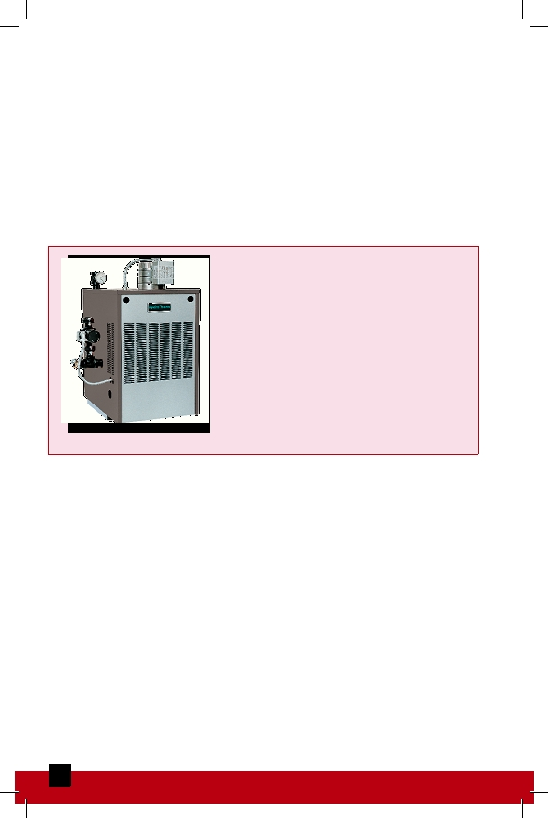
Soplador
Ventilador dentro del apartamento que opera
simultáneamente con el primer elemento de calefacción
cuando el llamado de calefacción es dado, y además,
después que los elementos están apagados. Este ventilador
opera a velocidad alta durante el ciclo de enfriamiento y a
velocidad baja durante el ciclo de calefacción.
Caldera de agua
Tanque de agua grande que
calienta agua con combustibles
como gas natural o aceite.
Caldera de agua
Circuladores
Mueven agua por el sistema hidrónico, y están compuestos
de un motor, una cadena y un impulsor, operando con
fuerza centrifuga. El impulsor golpea contra el agua y la
avienta hacia la parte de afuera de la tapa por donde es
forzada fuera de la bomba de alta presión. La presión
aumenta y el agua es empujada alrededor de un circuito de
tuberías hasta que eventualmente retorna.
45
Mantenimiento y reparación de climatación

Combustión completa
Ocurre cuando el carbón, el cual es liberado durante el
proceso de combustión, se une con oxígeno para formar
dióxido de carbono. Todos los gases producidos durante la
combustión completa como dióxido de carbono, vapor de
agua y nitrógeno, no son tóxicos y pueden ser ventilados
seguramente hacia la atmosfera.
Caldera de calefacción eléctrica
Este tipo de calefacción de resistencia eléctrica es el
sistema de calefacción más eficiente. Las cargas de
resistencia eléctrica primordialmente generan luz, calor o
ambos.
Elementos de calefacción eléctrica
Estos elementos de calefacción son componentes de
altaresistencia que no conducen electricidad libremente,
lo cual genera calor, el cual es transferido al espacio. En
un sistema de calefacción eléctrica se pueden encontrar
múltiples elementos de calefacción.
46
Mantenimiento y reparación de climatación
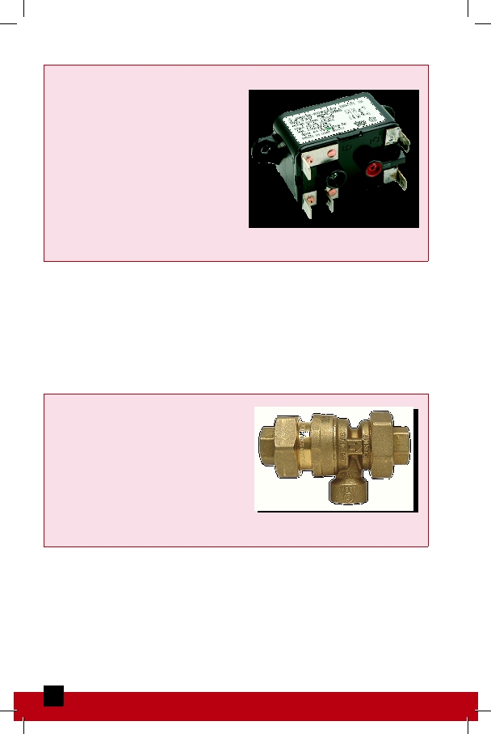
Relé del ventilador
Diseñado para energizar el
motor del ventilador una vez
que se le ha aplicado voltaje
al embobinado del relé.
Los contactos del relé del
ventilador están normalmente
abiertos, y debería de haber
resistencia infinita entre los
contactos cuando el motor no
Relé del ventilador
está energizado.
Interruptor del ventilador
Un interruptor que prende y apaga el motor del ventilador
en ciclos a su tiempo apropiado.
Válvula de
verificación de flujo
Válvula que previene el flujo
de agua caliente dentro de
un circuito de tuberías de
calefacción cuando el calor no
Válvula de verificación de flujo
es requerido en este espacio.
Tubería de ventilación
Ventilación responsable por dirigir los gases producidos
durante la combustión, desde la caldera hasta la parte de
afuera del edificio.
47
Mantenimiento y reparación de climatación
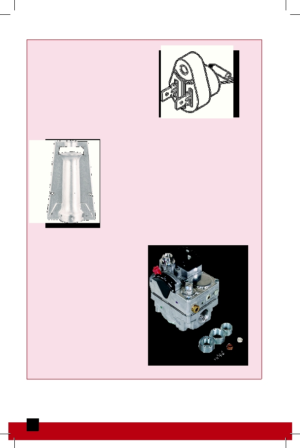
Enlace de fusibles
Un dispositivo de seguridad
que se derrite si la
temperatura sobrepasa
niveles de seguridad. Este
provee una protección
adicional al interruptor de
límite.
Enlace de fusibles
Quemadores de gas
La combustión se lleva a cabo
en los quemadores. Hay varias
configuraciones de quemadores:
puertos de rendijas (que producen
muchas llamas individuales),
quemadores de franja (que producen
una franja de llama singular), de tirada
hacia arriba y tirada hacia dentro (los
Quemadores de gas
dos producen una llama singular).
Válvula de control
de gas
Permite que el gas hacia
la caldera pueda ser
apagado manualmente,
regula la presión del
gas, actúa como un
interruptor de seguridad,
y automáticamente cierra
y abre en respuesta a los
requerimientos del sistema.
Válvula de control de gas
48
Mantenimiento y reparación de climatación
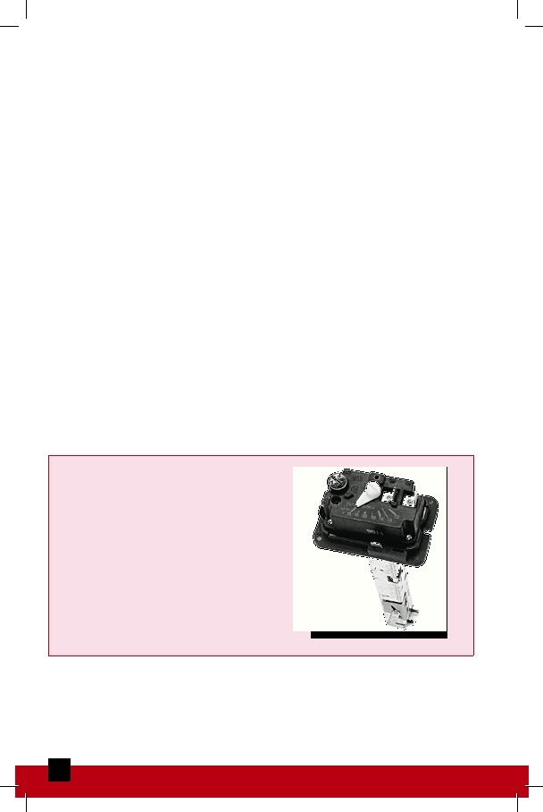
Caldera de gas
Estos sistemas de calefacción usan un principio que se
llama combustión para crear energía y calor. Durante la
combustión, un combustible prendido por una llama,
chispa, o calor es dejado quemar hasta que la temperatura
deseada es alcanzada. El oxígeno es también combinado
con el combustible para que la energía guardada en el
combustible pueda ser liberada. Todos estos tres elementos
— combustible, ignición y oxígeno — deben estar presentes
para que la combustión se lleve a cabo.
Ventilador de calefacción a gas
Este ventilador distribuye el aire calentado dentro del
sistema de ductos en el departamento. Opera cuando
el intercambiador de calor ha alcanzado la temperatura
deseada y también al final del ciclo de calefacción para
permitir al intercambiador de calor enfriarse.
Interruptor de límite de
caldera de gas
Dispositivo de seguridad que debe
estar siempre en una posición
cerrada a menos que haya un
problema dentro de la caldera.
Algunos interruptores del límite
tienen botones manuales para ser
reactivados.
Interruptor de límite de caldera de gas
49
Mantenimiento y reparación de climatación
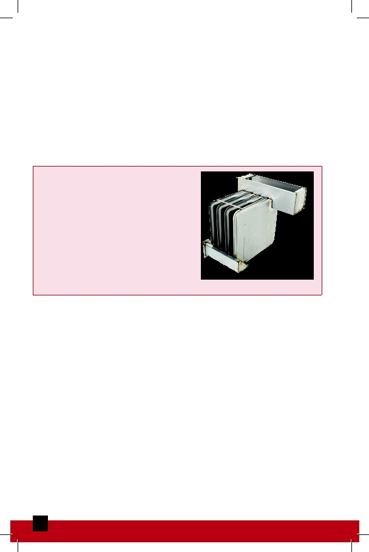
Múltiple de gas
El gas fluye a los quemadores por medio de una tubería
llamada múltiple, la cual está conectada a la válvula de
gas. Al final de cada rama del múltiple está una conexión
llamada spud. Cada spud tiene un hoyo, que permite que
una cantidad específica de combustible fluya de la rama del
múltiple a los quemadores.
Intercambiador de
calor
Provee una superficie de la
cual el calor es transferido
al aire en el departamento,
además de mantener los
gases producidos durante la
combustión separados de
este aire.
Intercambiador de calor
Calor
Cuando se aplica energía calorífica a una substancia,
las moléculas de esta substancia empiezan a moverse
rápidamente. Se chocan una con la otra, y esta fricción
causa que la temperatura de la substancia aumente. Por
el contrario, cuando se retira la energía calorífica, las
moléculas disminuyen su velocidad y la cantidad de fricción
se reduce.
50
Mantenimiento y reparación de climatación

Transferencia de calor
El calor puede ser transferido de un lugar a otro por medio
de tres métodos: conducción en sólidos, convección en
fluidos (líquidos o gases) y radiación por medio de cualquier
objeto que permita el paso de radiación. Los sistemas de
calefacción usan el método de convección para transferir
calor.
Sistemas de calefacción hidrónica
Sistemas de calefacción hidrónica dependen de la circulación
de agua caliente para llevar calor a los lugares donde la
calefacción es deseada. En lugar de usar grandes ductos de
aire, como calderas, el agua es calentada en un solo lugar,
para después ser bombeada hacia otros lugares a través
de tuberías. El calor es transferido al espacio por medio de
intercambiadores de calor localizados dentro del espacio.
Estos intercambiadores de calor son normalmente radiadores
o zócalos y también pueden ser llamados unidades
terminales.
Unidades terminales hidrónicas
Intercambiadores de calor del sistema, como: radiadores o
secciones de zócalos.
51
Mantenimiento y reparación de climatación
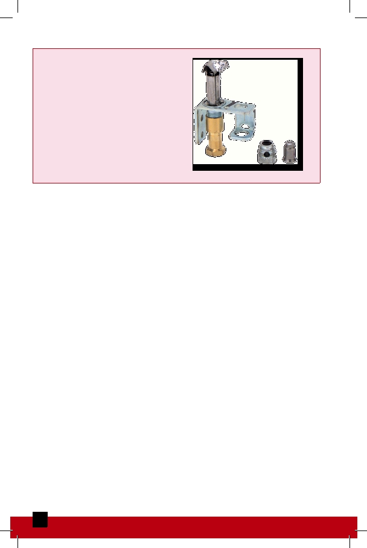
Sistemas de ignición
Encienden el gas una vez
que pasa por la válvula. Los
métodos más comunes
incluyen: llama de piloto,
piloto intermitente, ignición
de chispa directa e ignición
de superficie caliente.
Sistemas de ignición
Combustión incompleta
Ocurre cuando hay insuficiente oxígeno durante la
combustión, causando excesiva acumulación de carbón en
el sistema de calefacción. Dos sub-productos son creados:
monóxido de carbono y aldehído. Estos tóxicos son
ventilados hacia la parte de afuera del calentador por la vía
de una tubería de ventilación.
Entrelazado
La característica más importante en una caldera eléctrica
es el entrelazado entre el compartimiento del motor de
ventilación y los elementos eléctricos de calefacción. Un
entrelazado es cualquier condición o sets de condiciones
que tienen que cumplirse antes que un circuito eléctrico no
relacionado o separado pueda ser energizado. Movimiento
de aire dentro del sistema de ductos debe estar establecido
antes que la energía pueda suministrarse a los elementos
de calefacción.
52
Mantenimiento y reparación de climatación
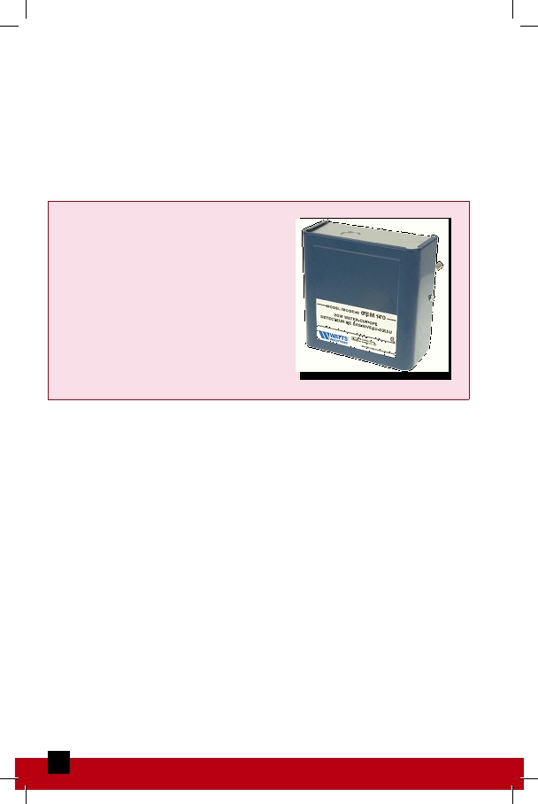
Interruptor de límite
Diseñado para abrirse si la temperatura excede la
temperatura de operación deseada en la caldera. Los
contactos se cierran si la temperatura regresa a un nivel
aceptable.
Interruptores de nivel
de agua
El interruptor de nivel de agua
es un dispositivo de seguridad
que dé-energiza un calentador
de agua si su nivel de agua cae
debajo de cierto nivel.
Interruptores de nivel de agua
Punto para no cambio de presión
El punto en sistema de tuberías donde la bomba de
circulación no puede afectar la presión en el sistema.
53
Mantenimiento y reparación de climatación
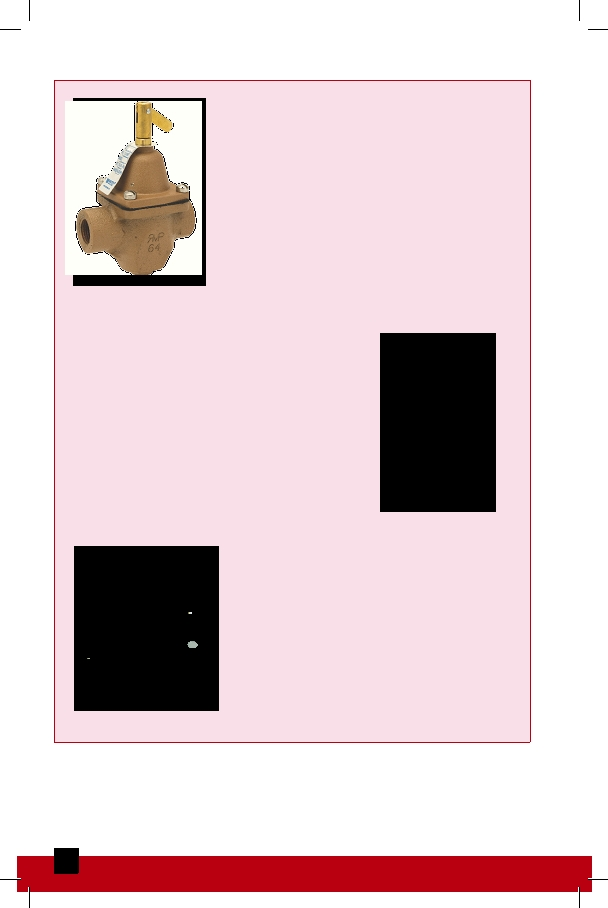
Válvula de reducción de
presión
Una válvula que automáticamente
baja la presión del agua al nivel el cual
el calentador de agua fue diseñado
a operar. Si la presión baja de cierto
nivel, la válvula se abre para darle más
agua al calentador de agua.
Válvula de reducción de
presión
Válvula de alivio de presión
Una válvula de seguridad que se abre
si la presión en el sistema alcanza un
punto fijado en la válvula. Cuando
la presión baja a un nivel aceptable,
la válvula se cerrará. Códigos para
edificar requieren que una válvula de
presión debe ser instalada en cada
calentador de agua.
Válvula de alivio de presión
Secuenciador
El secuenciador energiza el motor
del ventilador y múltiples elementos
de calefacción a intervalos de
tiempo regular por medio de
contactos eléctricos que cierran y
abren.
Secuenciador
54
Mantenimiento y reparación de climatación
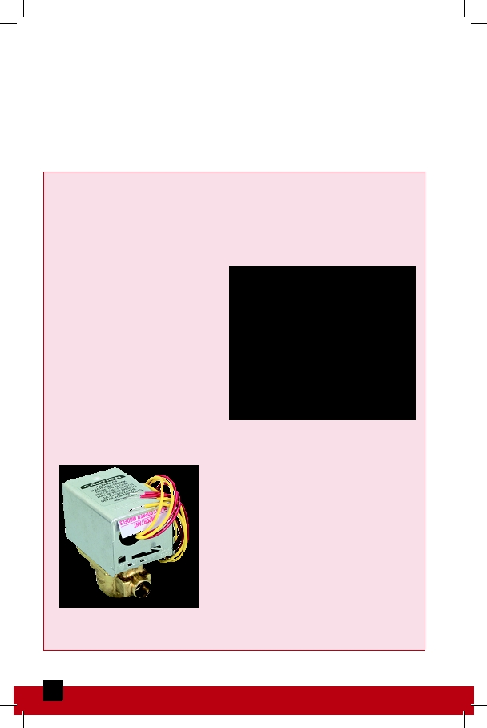
Tanque estándar de expansión/Extrol
El agua se expande cuando es calentada. Este tanque de
expansión crea un espacio extra necesario para contener el
agua calentada.
Termocople/Pila de fuerza
Sistemas de ignición que usan una llama de piloto, tienen
un control de seguridad llamado termacople. El termacople
crea una pequeña corriente eléctrica (18 mili-voltios) que
le indica al control de
combinación que la llama
del piloto esta prendida.
Si la llama del piloto se
apaga, el terma-copla
apagara el suministro
de gas a la caldera. Una
pila de fuerza (750 mili-
voltios) es una versión de
un termacople estándar
más potente.
Termocople/Pila de fuerza
Válvula de zona/Válvula
dial (diales Dan Floss)
Válvulas de zona abren y cierran
en respuesta a la temperatura de
un espacio coordinado. Cuando
una zona pide calefacción, la
válvula de zona se abre, y cierra
el interruptor que arranca la
bomba de circulación. La bomba
Válvula de zona/Válvula dial
de circulación trabaja hasta que
(diales Dan Floss)
se satisface el termostato.
55
Mantenimiento y reparación de climatación
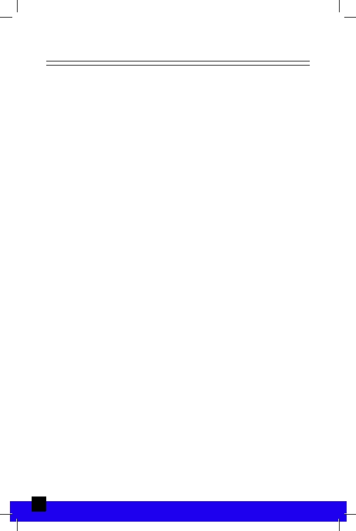
Índice
Secadoras de ropa ....................................................... 59
Panel de control ...............................................................59
Interruptor de puerta ......................................................59
Correa de empuje ...........................................................59
Tambor ..............................................................................59
Conducto de escape ......................................................60
Elemento de calefacción ...............................................60
Filtro de lino ......................................................................60
Motor ................................................................................. 61
Interruptor de arranque .................................................. 61
Fusible térmico ................................................................. 61
Termostato ........................................................................ 61
Lavadoras de ropa ....................................................... 62
Agitador .............................................................................62
Manguera de desagüe ....................................................62
Mangueras de entrada ....................................................62
Válvulas de entrada .........................................................63
Motor .................................................................................63
Bomba ...............................................................................63
Válvula solenoide .............................................................64
Temporizador ...................................................................64
Tina .....................................................................................64
Canasta de lavar...............................................................64
56
Mantenimiento y reparación de aparatos

Índice, continuación
Lavaplatos ..................................................................... 65
Sello de esquina ...............................................................65
Dispensador de detergente ...........................................65
Junta de la puerta ...........................................................65
Interruptor de puerta ......................................................66
Manguera de desagüe ....................................................66
Elemento de calefacción ...............................................66
Válvula de entrada ...........................................................67
Bomba ...............................................................................67
Brazos rociadores ............................................................67
Temporizador ...................................................................68
Estufa eléctrica .............................................................68
Elemento para asar ..........................................................68
Panel de control ...............................................................68
Elemento de calefacción para cocinar ........................68
Receptáculo del quemador ...........................................69
Elemento para hornear ...................................................69
Tubo capilar del horno ...................................................69
Junta del horno ...............................................................69
Control de temperatura del horno...............................69
Estufa de gas ................................................................. 70
Termostato del horno .....................................................70
Panel de control ...............................................................70
Ignición ..............................................................................70
Junta del horno ................................................................71
57
Mantenimiento y reparación de aparatos
Índice, continuación
Módulo de ignición del horno .......................................71
Termostato del horno ......................................................71
Llama del piloto ................................................................71
Refrigeradores .............................................................. 72
Compresor ........................................................................ 72
Serpentina del condensador ......................................... 72
Calentador para descongelar ........................................ 72
Serpentina del evaporador ............................................ 73
Temporizador para descongelar .................................. 73
Termómetro digital .......................................................... 73
Empaque de la puerta .................................................... 73
Válvula de llenado ........................................................... 74
Dispositivo medidor ........................................................ 74
Refrigerantes ..................................................................... 75
Termostato ........................................................................ 75
58
Mantenimiento y reparación de aparatos
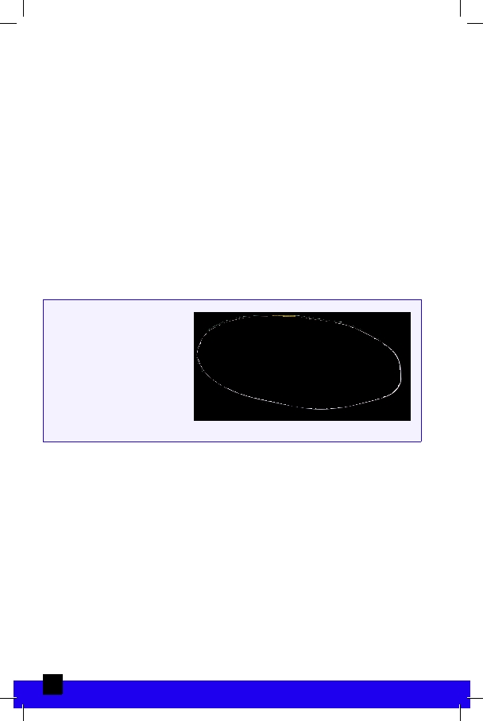
Secadoras de ropa
Panel de control
Contiene el interruptor de arranque y el temporizador.
Interruptor de puerta
Localizado en la puerta de acceso de la secadora, apaga
la secadora cuando la puerta es abierta por razones de
seguridad.
Correa de
empuje
Hace girar el
cilindro o tambor.
Correa de empuje
Tambor
Cilindro que contiene la ropa mojada y gira para remover el
exceso de agua.
59
Mantenimiento y reparación de aparatos
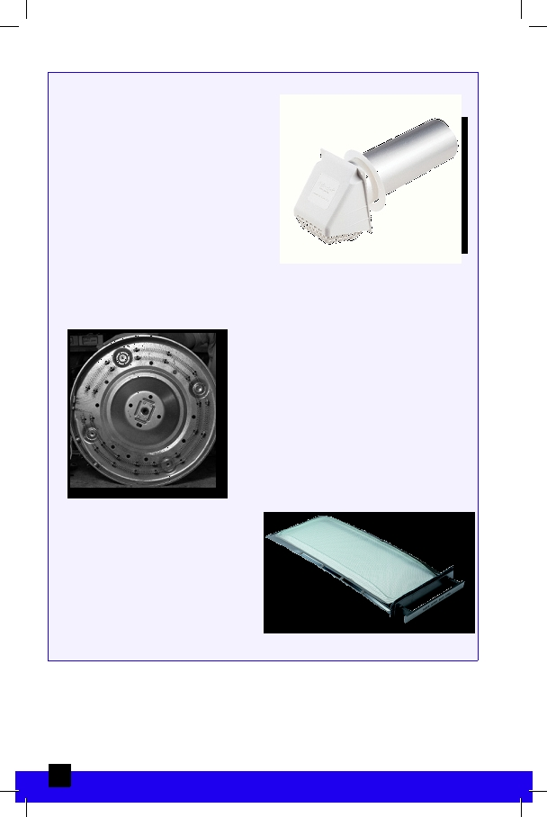
Conducto de escape
La humedad removida de la
ropa sale por medio de un
conducto de escape o tubería
de ventilación. Si el conducto
de escape está bloqueado
o restringido, el mismo aire
mojado estará circulando
dentro de la secadora,
aumentando grandemente el
período de secar.
Conducto de escape
Elemento de calefacción
Provee el catalizador para calentar
el aire. El elemento de calefacción
es diferente en secadoras a gas
y eléctricas. En una secadora
a gas, el calor es proveído por
un quemador de gas, y en una
secadora eléctrica, el calor
es proveído por un elemento
eléctrico de calefacción.
Elemento de calefacción
Filtro de lino
El lino, el cual es removido
durante el proceso de
secado, es capturado por
el filtro de lino dentro de
la secadora.
Filtro de lino
60
Mantenimiento y reparación de aparatos
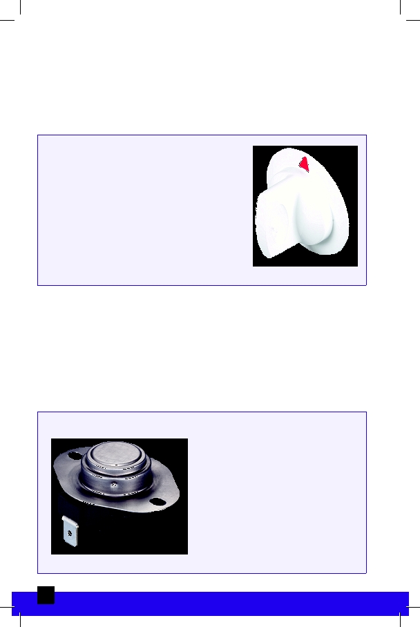
Motor
El motor hace girar la polea que controla la correa de
empuje.
Interruptor de arranque
Envía una carga eléctrica al motor y
lo pone en marcha.
Interruptor de arranque
Fusible térmico
Este dispositivo de seguridad es un fusible sensitivo al calor
en el conducto de escape que “se funde” si la secadora se
sobrecalienta.
Termostato
Este interruptor de control de
temperatura de la secadora es
controlado por la temperatura
dentro de la secadora, o por
el calor del motor. Uno o más
termostatos en el panel de
control pueden ser ajustados
para controlar la temperatura
Termostato
dentro de la secadora.
61
Mantenimiento y reparación de aparatos
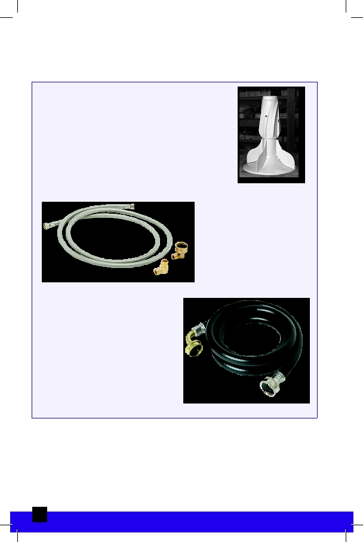
Lavadoras de ropa
Agitador
Un aparato con aletas situado en
el centro de las máquinas de lavar
verticales que se mueve hacia atrás
y adelante, y para arriba y abajo para
lavar la ropa.
Agitador
Manguera de
desagüe
Remueve el agua sucia
de la lavadora antes del
ciclo de exprimir.
Manguera de desagüe
Mangueras de
entrada
Llenan la lavadora de ropa
con agua limpia caliente,
fría o templada.
Mangueras de entrada
62
Mantenimiento y reparación de aparatos
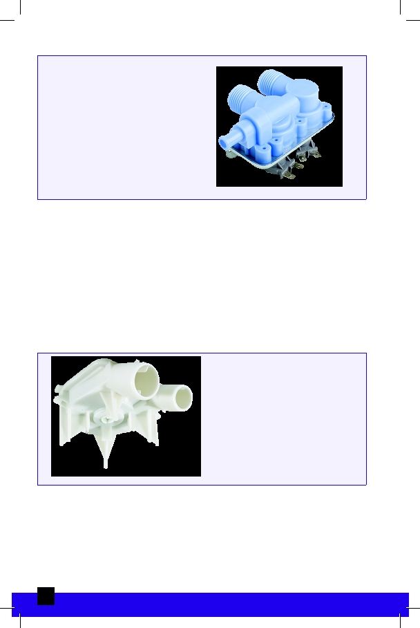
Válvulas de entrada
Válvulas de agua operadas
por solenoides eléctricos
que cuando son energizados
permiten la entrada de agua
a la máquina.
Válvulas de entrada
Motor
Hay dos tipos de máquinas: Una es la máquina de lavar
ropa de tracción directa que usa el engranaje del motor
para hacer girar el agitador y el tambor, y otra que usa una
correa de empuje para transferir la fuerza del motor al
agitador y el tambor, usando el sistema de polea y correa.
Bomba
Circula el agua alrededor
dentro de la máquina
durante diferentes ciclos,
y desagua el agua sucia
durante el ciclo de drenaje.
Bomba
63
Mantenimiento y reparación de aparatos
Válvula solenoide
Válvula electro-mecánica que se usa con líquido o gas.
Esta válvula es controlada por una corriente eléctrica que
corre por una bobina solenoide. Las válvulas solenoides
podrían tener dos o más puertas: En el caso de las válvulas
de dos puertas, el interruptor apaga y prende el flujo, y
en el caso de las válvulas de tres puertas, la salida de flujo
puede ser dirigida a dos diferentes puertas de salida.
Se pueden instalar múltiples válvulas solenoides juntas en
un solo múltiple.
Temporizador
Energiza diferentes componentes durante los ciclos de
llenar, lavar, desaguar, enjuagar y exprimir.
Tina
Un cilindro grande que sostiene la canasta de lavar.
Canasta de lavar
Un cilindro que sostiene la ropa.
64
Mantenimiento y reparación de aparatos
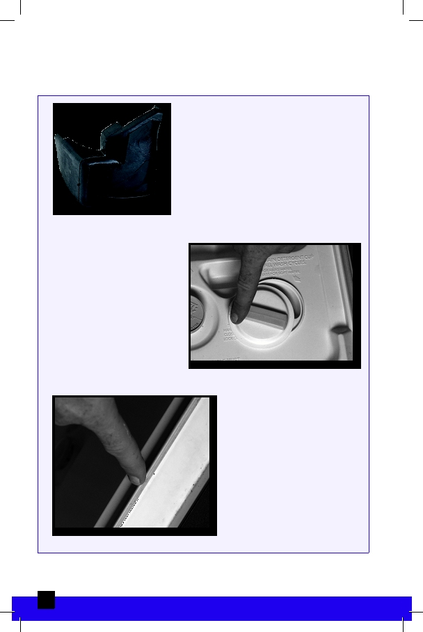
Lavadora de platos
Sello de esquina
Se encuentra al frente en las
esquinas de la parte de abajo de
la máquina, y ayuda a mantener la
lavadora de platos hermética.
Sello de esquina
Dispensador de
detergente
Libera el detergente
dentro del lavaplatos
al tiempo apropiado
durante el ciclo de
lavado.
Dispensador de detergente
Junta de la
puerta
Sella la puerta para
crear un ambiente
hermético.
Junta de la puerta
65
Mantenimiento y reparación de aparatos
Interruptor de
puerta
La mayoría de las
máquinas tienen un
picaporte (interruptor)
que debe estar cerrado
para que el aparato
pueda funcionar.
Interruptor de puerta
Manguera de desagüe
Permite el agua sucia salir de la máquina. La mayoría de las
mangueras de desagüe están conectadas al triturador de
desperdicios del fregadero de la cocina, y tienen que tener
un espacio con aire para evitar que el agua sucia regrese a
la máquina.
Elemento de calefacción
Calienta el agua en la lavadora de platos a 140 ° Fahrenheit
para propósitos de sanitación durante el ciclo de lavado,
y también seca los platos durante el ciclo de secado de
platos a calor.
66
Mantenimiento y reparación de aparatos
Válvula de entrada
Válvula de agua operada por un
solenoide eléctrico que cuando
es energizado permite la entrada
de agua a la máquina.
Válvula de entrada
Bomba
Un motor eléctrico le da
potencia a la bomba. Durante
el ciclo de lavado, la bomba
fuerza el agua hacia los brazos
rociadores. Durante el ciclo de
desagüe, la bomba dirige el agua
hacia la manguera de desagüe.
Bomba
Brazos rociadores
Agua es bombeada hacia arriba dentro de uno o varios
brazos por medio de una torre durante el ciclo de lavado. El
brazo gira, rociando agua dentro de la máquina.
67
Mantenimiento y reparación de aparatos
Temporizador
El temporizador determina cuanto tiempo cada parte
del ciclo dura, y activa la función apropiada al período
apropiado.
Estufa eléctrica
Elemento para asar
Elemento de calefacción localizado en la parte de arriba del
interior del horno.
Panel de control
Contiene el termostato del horno, controles para los
quemadores, reloj, luz indicadora y otras características.
Elemento de
calefacción para
cocinar
Quemadores espirales
que se calientan
cuando se les conecta
la corriente eléctrica.
Elemento de calefacción para cocinar
68
Mantenimiento y reparación de aparatos
Receptáculo del quemador
Provee corriente eléctrica al elemento de calefacción para
cocinar.
Elemento para
hornear
Elemento de
calefacción localizado
en la parte de abajo del
interior del horno.
Elemento para hornear
Tubo capilar del horno
Tubo fijado en la pared interior del horno que percibe la
temperatura en el horno y activa el control que ajusta la
temperatura.
Junta del horno
Una pieza moldeada que se ajusta a la puerta del horno
para sellarla.
Control de temperatura del horno
Ajusta la temperatura en la parte interna del horno cuando
es activado por el tubo capilar.
69
Mantenimiento y reparación de aparatos
Termostato del
horno
Colocado atrás del
botón seleccionador
de temperatura, este
indicador puede ser
calibrado cuando la
temperatura actual del
horno está por arriba o
debajo de la temperatura
Termostato del horno
seleccionada.
Estufa de gas
Panel de control
Contiene el termostato
del horno, controles para
los quemadores, reloj,
luz indicadora y otras
características.
Panel de control
Ignición
La mayoría de las estufas
a gas modernas usan una
ignición de chispa eléctrica
para prender la llama.
Ignición
70
Mantenimiento y reparación de aparatos
Junta del horno
Una pieza moldeada que se ajusta a la puerta del horno
para sellarla.
Modulo de ignición del horno
Produce la chispa de alto voltaje necesaria para iniciar la
ignición.
Termostato del horno
Colocado atrás del botón seleccionador de temperatura,
este indicador puede ser calibrado cuando la temperatura
actual del horno está por arriba o debajo de la temperatura
seleccionada.
Llama del piloto
Estufas de gas más
antiguas usan una llama de
gas pequeña (¼” a ½”) para
prender los quemadores.
Llama del piloto
71
Mantenimiento y reparación de aparatos
Refrigeradores
Compresor
Bomba especializada en extraer refrigerante frio en forma
de vapor a baja presión del evaporador por medio de una
tubería de succión y comprimirlo, causando un aumento de
presión y temperatura en el refrigerante, convirtiéndolo en
vapor a alta presión y temperatura, y empujarlo hacia afuera
por una tubería de descarga.
Serpentina del condensador
La serpentina localizada en la parte de atrás o abajo afuera
del refrigerador permite al refrigerante de alta temperatura
disipar el calor.
Calentador para descongelar
Elemento de calefacción energizado
para derretir el hielo en la serpentina
del evaporador durante el ciclo de
descongelación.
Calentador para
descongelar
72
Mantenimiento y reparación de aparatos
Temporizador para
descongelar
Energiza el termostato durante
el ciclo de enfriamiento, y
el interruptor de limite de
descongelar/calentador para
descongelar durante el ciclo de
Temporizador para descongelar
descongelación.
Termómetro digital
Herramienta usada para tomar la
temperatura interior de aparatos
electrodomésticos, como
hornos y refrigeradores, durante
su operación.
Termómetro digital
Junta de la puerta
Provee un sello para
mantener el frio adentro y el
calor afuera del refrigerador.
Junta de la puerta
Serpentina del evaporador
El set de serpentinas adentro del refrigerador que permiten
al refrigerante absorber calor, y enfrían el refrigerador por
dentro.
73
Mantenimiento y reparación de aparatos
Válvula de llenado
Un solenoide que abre y
cierra el paso de agua a la
máquina de hacer hielo.
Válvula de llenado
Dispositivo medidor
Este dispositivo regula el flujo de refrigerante líquido de
alta presión que pasa al evaporador. Cuando el refrigerante
pasa por este dispositivo, cambia de líquido a alta presión y
temperatura a líquido de baja presión y temperatura.
74
Mantenimiento y reparación de aparatos
Refrigerantes
Químicos que circulan alrededor
del sistema de enfriamiento
del refrigerador, absorbiendo y
expulsando calor a la vez que
son hervidos y condensados
en el sistema. El refrigerante
más comúnmente usado
actualmente en refrigeradores de
departamentos es el R-134A.
Refrigerantes
Termostato
Control que regula la
temperatura dentro del
refrigerador, el cual es
activado por un tubo
capilar localizado adentro
del refrigerador que
Termostato
percibe la temperatura.
75
Mantenimiento y reparación de aparatos

Índice
A
Conexión transitiva . . . . . . . . . . . . . . . . . . 26
Accesorios de plomería . . . . . . . . . . . . . . 21
Continuidad . . . . . . . . . . . . . . . . . . . . . . . . 11
Agitador . . . . . . . . . . . . . . . . . . . . . . . . . . . 62
Control de temperatura del horno . . . .69
Aireador . . . . . . . . . . . . . . . . . . . . . . . . . . .20
Correa de empuje . . . . . . . . . . . . . . . . . . . 59
Aire de suministro . . . . . . . . . . . . . . . . . . . 42
Corriente . . . . . . . . . . . . . . . . . . . . . . . . . . 11
Amperio . . . . . . . . . . . . . . . . . . . . . . . . . . . 10
Cortador de tubo . . . . . . . . . . . . . . . . . . . 26
Antorcha de propano . . . . . . . . . . . . . . . . 24
Corto circuito . . . . . . . . . . . . . . . . . . . . . . 17
Aparatos electrodomésticos . . . . . . . . . .20
Culebra de plomeros . . . . . . . . . . . . . . . . 23
Apariencia exterior . . . . . . . . . . . . . . . . . . . 3
D
Aquastat . . . . . . . . . . . . . . . . . . . . . . . . . . .44
Desatascador . . . . . . . . . . . . . . . . . . . . . . . 24
Argamasa . . . . . . . . . . . . . . . . . . . . . . . . . . . 6
Detector de fugas electrónico . . . . . . . . 34
B
Dispensador de detergente . . . . . . . . . . . 65
Balanza electrónica . . . . . . . . . . . . . . . . . 33
Dispositivo medidor . . . . . . . . . . . . . .36, 74
Balasto . . . . . . . . . . . . . . . . . . . . . . . . . . . . 10
Distribución de agua . . . . . . . . . . . . . . . . 26
Bomba . . . . . . . . . . . . . . . . . . . . . . . . .63, 67
Disyuntores y fusibles . . . . . . . . . . . . . . . 11
Bomba de evacuación . . . . . . . . . . . . . . . 43
E
Brazos rociadores . . . . . . . . . . . . . . . . . . . 67
Elemento de calefacción . . . . . . . . . 60, 66
Burbujas detectoras de fugas . . . . . . . . . 35
Elemento de calefacción para
C
cocinar . . . . . . . . . . . . . . . . . . . . . . . . . . . .68
Cable . . . . . . . . . . . . . . . . . . . . . . . . . . . . . 10
Elemento para asar . . . . . . . . . . . . . . . . . .68
Caldera de agua . . . . . . . . . . . . . . . . . . . . 45
Elemento para hornear . . . . . . . . . . . . . .69
Caldera de calefacción eléctrica . . . . . .46
Elementos de calefacción eléctricos . . .46
Caldera a gas . . . . . . . . . . . . . . . . . . . . . . .49
Enlace de fusibles . . . . . . . . . . . . . . . . . . .48
Calentador para descongelar . . . . . . . . . 72
Entrelazado . . . . . . . . . . . . . . . . . . . . . . . . 52
Calor . . . . . . . . . . . . . . . . . . . . . . . . . . . . . .50
Equipos de protección personal
Cambian dela combinación de una
(PPE) . . . . . . . . . . . . . . . . . . . . . . . . . . . 16, 22
cerradura . . . . . . . . . . . . . . . . . . . . . . . . . . . 6
Estufa a gas . . . . . . . . . . . . . . . . . . . . . . . . 70
Canasta de lavar . . . . . . . . . . . . . . . . . . . .64
Estufa eléctrica . . . . . . . . . . . . . . . . . . . . .68
Capacitador de arranque y de marcha . 41
F
Cerradura de vacante . . . . . . . . . . . . . . . . . 7
Filtro de lino . . . . . . . . . . . . . . . . . . . . . . . .60
Chispas eléctricas . . . . . . . . . . . . . . . . . . . 10
Flus del calentador de agua . . . . . . . . . . 27
Chorro . . . . . . . . . . . . . . . . . . . . . . . . . . . . 25
Fuerza eléctrica . . . . . . . . . . . . . . . . . . . . . 16
Circuito . . . . . . . . . . . . . . . . . . . . . . . . . . . 11
Fusible térmico . . . . . . . . . . . . . . . . . . . . . 61
Circuitos de componentes carga . . . . . . 35
Circuitos de control . . . . . . . . . . . . . . . . . 33
H
Circuitos de entrada de
Hacer tierra . . . . . . . . . . . . . . . . . . . . . . . . 13
fuerza eléctrica . . . . . . . . . . . . . . . . . . . . . 34
Herramienta para reemplazar el
Circuito sobrecargado . . . . . . . . . . . . . . . 15
centro de una válvula Schroeder . . . . . .40
Circuladores . . . . . . . . . . . . . . . . . . . . . . . 45
Hilo caliente . . . . . . . . . . . . . . . . . . . . . . . 14
Cola de puerco . . . . . . . . . . . . . . . . . . . . . 16
Hilo neutral . . . . . . . . . . . . . . . . . . . . . . . . 15
Combustión completa . . . . . . . . . . . . . . .46
Hojas de materiales de datos de
Combustión incompleta . . . . . . . . . . . . . 52
seguridad (MSDS) . . . . . . . . . . . . . . . .22, 36
Compresor . . . . . . . . . . . . . . . . . . . . .32, 72
Compresor . . . . . . . . . . . . . . . . . . . . . . . . 72
I
Conducto de escape . . . . . . . . . . . . . . . .60
Ignición . . . . . . . . . . . . . . . . . . . . . . . . . . . 70
Conductor . . . . . . . . . . . . . . . . . . . . . . . . . 11
Incendio eléctrico . . . . . . . . . . . . . . . . . . 12
Conexiones . . . . . . . . . . . . . . . . . . . . . . . . 21
Intercambiador de calor . . . . . . . . . . . . .50
76
Índice
Índice
Interruptor de arranque . . . . . . . . . . . . . . 61
Punto de no cambio de presión . . . . . . . 53
Interruptor de límite . . . . . . . . . . . . . . . . . 53
Punto de saturación del refrigerante . . . 38
Interruptor del ventilador . . . . . . . . . . . . 47
Q
Interruptor de nivel de agua . . . . . . . . . . 53
Interruptor de puerta . . . . . . . . . . . . .59, 66
Quemadores de gas . . . . . . . . . . . . . . . . .48
Interruptor de tres vías . . . . . . . . . . . . . . . 17
R
Interruptor eléctrico . . . . . . . . . . . . . . . . . 13
Radio de eficiencia de energía
Interruptor de limite de caldera a gas . .49
temporal (SEER) . . . . . . . . . . . . . . . . . . . .40
J
Receptáculo del quemador. . . . . . . . . . .69
Junta de la puerta . . . . . . . . . . . . . . . .65, 73
Refrigeradores . . . . . . . . . . . . . . . . . . . . . . 72
Junta del horno . . . . . . . . . . . . . . . . . 69, 71
Refrigerantes . . . . . . . . . . . . . . . . . . . . 39, 75
Relé de arranque del motor
L
del compresor . . . . . . . . . . . . . . . . . . . . . . 32
Lavaplatos . . . . . . . . . . . . . . . . . . . . . . . . . 65
Relé del ventilador . . . . . . . . . . . . . . . . . . 47
Lavadoras de ropa . . . . . . . . . . . . . . . . . . 62
Renta perdida . . . . . . . . . . . . . . . . . . . . . . . 4
Lechada . . . . . . . . . . . . . . . . . . . . . . . . . . . . 4
Resistencia . . . . . . . . . . . . . . . . . . . . . . . . . 17
Líneas de refrigerante . . . . . . . . . . . . . . . 38
Retorno de aire en plenum . . . . . . . . . . . 39
Lista de verificación de exterior de
S
edificios . . . . . . . . . . . . . . . . . . . . . . . . . . . . 2
Lista de verificación de la apariencia
Salida de desagüe . . . . . . . . . . . . . . . . . . . 26
exterior . . . . . . . . . . . . . . . . . . . . . . . . . . . . . 3
Secadoras de ropa . . . . . . . . . . . . . . . . . . 59
Lista de verificación del proceso de
Secuenciador . . . . . . . . . . . . . . . . . . . . . . 54
preparación de apartamentos . . . . . . . . . 5
Segunda inspección . . . . . . . . . . . . . . . . . . 6
Llama del piloto . . . . . . . . . . . . . . . . . . . . 71
Sellador de acrílico látex . . . . . . . . . . . . . . 2
Llave Stillson . . . . . . . . . . . . . . . . . . . . . . . 23
Sellador de butírico de hule . . . . . . . . . . . 2
Sellador de silicona . . . . . . . . . . . . . . . . . . 7
M
Sellador de vinilo látex . . . . . . . . . . . . . . . . 7
Manguera de desagüe . . . . . . . . . . . .62, 66
Sello de cera del inodoro . . . . . . . . . . . . 25
Mangueras de entrada . . . . . . . . . . . . . . . 62
Sello de esquina . . . . . . . . . . . . . . . . . . . . 65
Manómetros . . . . . . . . . . . . . . . . . . . . . . . 36
Separadores de aire . . . . . . . . . . . . . . . . .44
Mantenimiento de preparación de
Serpentina del condensador . . . . . . .32, 72
departamentos . . . . . . . . . . . . . . . . . . . . . . 5
Serpentina del evaporador . . . . . . . .34, 73
Maquina de recuperación . . . . . . . . . . . . 37
Shock eléctrico . . . . . . . . . . . . . . . . . . . . . 12
Medidor múltiple . . . . . . . . . . . . . . . . 14, 37
Sistema de drenaje-alcantarillado-
Modulo de ignición del horno . . . . . . . . 71
ventilación (DWV) . . . . . . . . . . . . . . . . . . . 21
Motor . . . . . . . . . . . . . . . . . . . . . . . . . .61, 63
Sistema de plomería . . . . . . . . . . . . . . . . . 23
Múltiple de gas . . . . . . . . . . . . . . . . . . . . .50
Sistemas de calefacción hidrónica . . . . . 51
Sistemas de ignición. . . . . . . . . . . . . . . . . 52
O
Sobrecarga . . . . . . . . . . . . . . . . . . . . . . . . 15
Ohmios . . . . . . . . . . . . . . . . . . . . . . . . . . . 15
Soplador . . . . . . . . . . . . . . . . . . . . . . . . . . . 45
P
Subenfriamiento . . . . . . . . . . . . . . . . . . . . 42
Suministro de agua . . . . . . . . . . . . . . . . . . 28
Panel de control . . . . . . . . . . . . . 59, 68, 70
Supercalentamiento . . . . . . . . . . . . . . . . . 42
Puertos de servicio . . . . . . . . . . . . . . . . . . 41
Presión del refrigerante . . . . . . . . . . . . . . 38
T
Primera inspección . . . . . . . . . . . . . . . . . . . 4
Tablarroca . . . . . . . . . . . . . . . . . . . . . . . . . . 3
Procedimiento de bloqueo y rotulado
Tablero del proceso de preparación de
eléctrico . . . . . . . . . . . . . . . . . . . . . . . . 14, 22
departamentos . . . . . . . . . . . . . . . . . . . . . . 5
Punto de hervor del refrigerante . . . . . . 37
Tambor . . . . . . . . . . . . . . . . . . . . . . . . . . . . 59
77
Índice
Índice
Tanque estándar de expansión/extrol . . 55
V
Tapón de montaje . . . . . . . . . . . . . . . . . . 24
Válvula de alivio . . . . . . . . . . . . . . . . . . . . . 21
Temporizador . . . . . . . . . . . . . . . . . . .64, 68
Válvula de alivio de presión . . . . . . . . . . . 54
Temporizador para descongelar . . . . . . 73
Válvula de alivio para presión y
Termacople/ pila de fuerza . . . . . . . . . . . 55
temperatura del calentador de agua . . . 28
Termómetro digital . . . . . . . . . . . . . . . 33, 73
Válvula de balance . . . . . . . . . . . . . . . . . .44
Termostato . . . . . . . . . . . . . . . . . .43, 61, 75
Válvula de control de gas . . . . . . . . . . . .48
Termostato del calentador de agua . . . . 28
Válvula de derrame del inodoro . . . . . . . 25
Termostato del horno . . . . . . . . . . . . 70, 71
Válvula de entrada . . . . . . . . . . . . . . . . . . 67
Textura . . . . . . . . . . . . . . . . . . . . . . . . . . . . . 7
Válvula de llenado . . . . . . . . . . . . . . . . . . . 74
Tina . . . . . . . . . . . . . . . . . . . . . . . . . . . . . . .64
Válvula de llenado del inodoro . . . . . . . . 25
Tomacorriente eléctrico . . . . . . . . . . . . . 12
Válvula de reducción de presión . . . . . . 54
Tomacorriente GFCI . . . . . . . . . . . . . . . . . 13
Válvula de verificación de flujo . . . . . . . . 47
Trampas . . . . . . . . . . . . . . . . . . . . . . . . . . . 24
Válvula de zona/válvula dial (diales Dan
Transferencia de calor . . . . . . . . . . . . . . . 51
Floss) . . . . . . . . . . . . . . . . . . . . . . . . . . . . . . 55
Tubería de ventilación . . . . . . . . . . . . . . . 47
Válvulas . . . . . . . . . . . . . . . . . . . . . . . . . . . 26
Tuberías . . . . . . . . . . . . . . . . . . . . . . . . . . . 23
Válvulas de entrada . . . . . . . . . . . . . . . . . 63
Tubo ABS . . . . . . . . . . . . . . . . . . . . . . . . . .20
Válvula solenoide . . . . . . . . . . . . . . . . . . .64
Tubo capilar del horno . . . . . . . . . . . . . . .69
Varilla de ánodo . . . . . . . . . . . . . . . . . . . . 27
Tubo CPVC . . . . . . . . . . . . . . . . . . . . . . . .20
Vatios . . . . . . . . . . . . . . . . . . . . . . . . . . . . . 17
Tubo de descenso del
Ventilador de calefacción a gas . . . . . . .49
calentador de agua. . . . . . . . . . . . . . . . . . 27
Vista del “proceso de preparación de
Tubo de hierro galvanizado . . . . . . . . . . . 22
departamentos” . . . . . . . . . . . . . . . . . . . . . 5
Tubo PVC . . . . . . . . . . . . . . . . . . . . . . . . . . 24
Voltaje (o voltios) . . . . . . . . . . . . . . . . . . . 17
U
Unidades terminales hidrónicas . . . . . . . 51
78
Índice